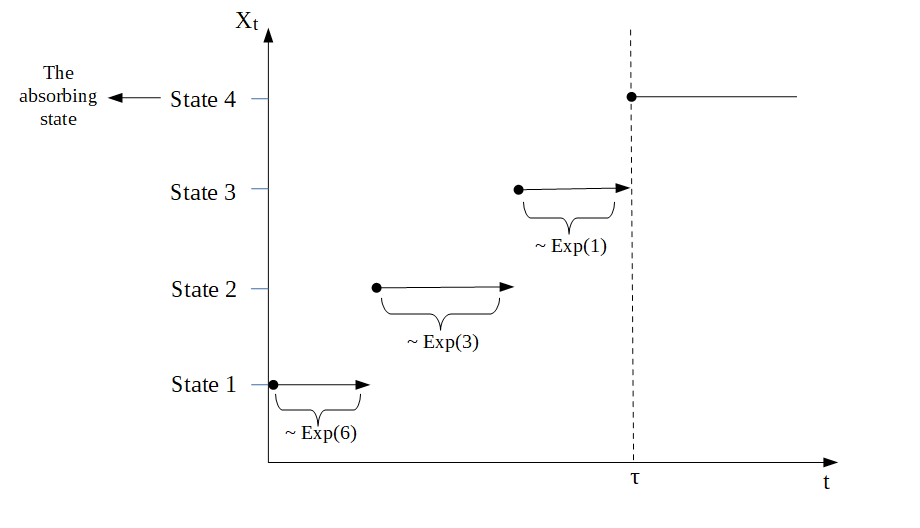

PhaseTypeGenetics - With mathematical details
Source:vignettes/PhaseTypeGenetics_Mathematical_Details.Rmd
PhaseTypeGenetics_Mathematical_Details.Rmdlibrary(PhaseTypeGenetics)
#> Thank you for choosing the package 'PhaseTypeGenetics'.
#>
#> We appreciate your support!
#>
#>
#>
#> Report a bug or ask a question about PhaseTypeGenetics at
#>
#> https://github.com/aumath-advancedr2019/phastypdist/issues.
#>
#>
#>
#> Now let's get started!Introduction to PhaseTypeGenetics
The aim of this package is to provide the user with some comprehensive tools to analyse discrete and continuous phase-type distributions. As recent research confirms the applicability of phase-type theory in population genetics, most of the examples provided in the package are based on coalescent theory. In addition, the package provides some function that are intended for the use in population genetics only.
All functions and applications are based on the theory developed in
- [BN] Mogens Bladt and Bo Friis Nielsen (2017): . Probability Theory and Stochastic Modelling (Springer), Volume 81
- and [HSB] Asger Hobolth, Arno Siri-Jégousse, Mogens Bladt (2019): . Theoretical Population Biology, 127, pp. 16-32.
Defining phase-type distributions
This package is based on discrete and continuous phase-type distributions. In order to introduce the user to this topic and establish the notation that will be used throughout this vignette, we will give a short definition on both types of phase-type distributions.
The discrete phase-type distribution
Let \(\{X_t\}_{t \in \mathbb{N}}\) be a Markov chain with state space equal to \(\{1,2,...,p,p+1\}\). The states \(1,2,...,p\) are assumed to be transient, while the last state \(p+1\) is absorbing. Then we can define the transition matrix \[\begin{equation*}
P = \begin{pmatrix}
T & t \\
\boldsymbol{0} & 1
\end{pmatrix},
\end{equation*}\] where \(T\) is a \(p \times p\) sub-transition matrix holding the probabilities for jumping between all transient states and \(t\) is a \(p\)-dimensional column vector holding the exit probabilities (the probabilities for absorption). As all rows in the transition matrix \(P\) have to sum to one, we can compute \(t\) from the sub-transition matrix \(T\), \[\begin{equation*}
Te +t = e \quad \Rightarrow \quad t=e-Te = (I-T)e
\end{equation*}\] where \(e = (1,...,1)^T\) is a \(p\)-dimensional vector of ones.
Now we let \(\pi_i = \mathbb{P}(X_0 =i)\) be the initial probability for the process to start in state \(i\) and \(\pi = (\pi_1,...,\pi_p)\) be the initial distribution. As we do not want the process to start in the absorbing state, we assume that \(\pi_1+\cdots +\pi_p=1\).
Finally, we let \(\tau = \inf\{t \geq 1 \mid X_t = p+1\}\) be the waiting time until absorption in the last state of the Markov chain \(\{X_t\}_{t \in \mathbb{N}}\). Then we say that \(\tau\) is discrete phase-type distributed with initial distribution \(\pi\) and sub-transition probability matrix \(T\), \[\begin{equation*}
\tau \sim \text{DPH}_p (\pi,T).
\end{equation*}\]
The continuous phase-type distribution
The continuous phase-type distribution is defined in a corresponding way.
Let \(\{X_t\}_{t \geq 0}\) be a Markov jump process with state space equal to \(\{1,2,...,p,p+1\}\) (here, the time is continuous). As in the discrete case, the states \(1,2,...,p\) are assumed to be transient, while the last state \(p+1\) is absorbing. Then we can rewrite the intensity rate matrix to be of the form \[\begin{equation*}
\Lambda = \begin{pmatrix}
T & t \\
\boldsymbol{0} & 0
\end{pmatrix},
\end{equation*}\] where \(T\) is a \(p \times p\) sub-intensity matrix holding the rates for jumping between all transient states and \(t\) is a \(p\)-dimensional column vector holding the exit rates. As all rows in an intensity rate matrix have to sum to zero, we can compute \(t\) from the sub-intensity matrix \(T\), \[\begin{equation*}
Te +t = \boldsymbol{0} \quad \Rightarrow \quad t=-Te
\end{equation*}\] where \(e = (1,...,1)^T\) is a \(p\)-dimensional vector of ones.
Now we define the initial distribution. Let \(\pi_i = \mathbb{P}(X_0 =i)\) be the initial probability for the process to start in state \(i\) and \(\pi = (\pi_1,...,\pi_p)\) be the initial distribution. As we do not want the process to start in the absorbing state, we assume that \(\pi_1+\cdots +\pi_p=1\).
As before, we let \(\tau = \inf\{t > 0 \mid X_t = p+1\}\) be the waiting time until absorption in the last state. Then we say that \(\tau\) is phase-type distributed with initial distribution \(\pi\) and sub-intensity rate matrix \(T\), \[\begin{equation*}
\tau \sim \text{PH}_p (\pi,T).
\end{equation*}\]
Applications in Population Genetics
The Wright-Fisher model
We consider the Wright-Fisher model, i.e. generations are non-overlapping, the population size is fixed and each individual chose its parents uniformly at random. Let \(N\) be the population size and \(n\) the sample size. Furthermore, let \(R_n\) be the number of generations until coalescent of any of the \(n\) individuals. Then it holds that the time measured in number of generations \(T_n = \tfrac{R_n}{n}\) is approximately exponentially distributed with a rate of \(\binom{n}{2}\), \[\begin{equation*} T_n \sim \text{ Exp}(\binom{n}{2}). \end{equation*}\] Due to this definition, the time to the most recent common ancestor is given as \[\begin{equation*} T_{\text{MRCA}} = T_2 + \cdots + T_n \end{equation*}\] and the total branch length can be defined in the following way \[\begin{equation*} T_{\text{Total}} = 2T_2 + \cdots + nT_n \end{equation*}\]
The phase-type distribution
We can think of a tree as a continuous time Markov chain (CTMC) or a Markov jump process in the following way. We let State 1 correspond to \(T_n\), State 2 denote \(T_{n-1}\), etc. Then State \(n-1\) corresponds to \(T_2\) and State \(n\) is the absorbing state, where all individuals have found the most recent common ancestor. In this scenario, \(T_{MRCA}\) is the waiting time for the process to be absorbed in state \(n\), \[\begin{equation*}
T_{\text{MRCA}} = \tau_{\text{MRCA}} = \inf\{t > 0 \mid X_t = \text{ State } n\}.
\end{equation*}\] Due to the fact that \(T_k \sim \text{ Exp}(\binom{k}{2})\), the corresponding rate matrix is defined as \[\begin{equation*}
\Lambda = \begin{pmatrix}
- \binom{n}{2} & \binom{n}{2} & 0 & 0 &\cdots & 0 \\
0 & -\binom{n-1}{2} & \binom{n-1}{2} & 0 & \cdots & 0 \\
\vdots & 0 & \ddots & \ddots & 0 & 0 \\
0 & \cdots & 0 & -3 & 3 & 0 \\
0 & \cdots & 0 & 0 & -1 & 1 \\
0 & \cdots & 0 & 0 & 0 & 0 \\
\end{pmatrix}
\end{equation*}\] and as we are interested in the whole tree, the initial distribution is \[\begin{equation*}
\pi = (1,0,…,0),
\end{equation*}\] i.e. the process always starts in State 1.
As all rows in a rate matrix have to sum to zero, and as we are interested in the time spend in the transient states, we can disregard the last state (the absorbing state). Instead, we consider the sub-intensity rate matrix T, which is the upper left sub-matrix of \(\Lambda\) \[\begin{equation*}
\Lambda = \begin{pmatrix}
T & t \\
\mathbf{0} & 0
\end{pmatrix}
\end{equation*}\] By letting \(p\) denote the number of transient states, we have that \(T\) is a \(p \times p\) matrix, \(t\) is a \(p \times 1\) exit rate vector and \(\mathbf{0}\) is a \(1 \times p\) vector of zeros. As already mentioned, all rows in the generator matrix \(\Lambda\) have to sum to zero, hence the exit rate vector can be computed as \[\begin{equation*}
t = -T\boldsymbol{e},
\end{equation*}\] where \(\boldsymbol{e}\) is a \(p \times 1\) vector with one in each entry. By disregarding the absorbing state, we also have to reduce the dimension of the initial distribution \(\pi= (\pi_1,…,\pi_p)\). In this new set-up, \(\pi\) is now a \(1 \times p\) vector that has to sum to one.
Now we have that the waiting time to absorption in state \(p+1\), \(\tau = \inf \{t > 0 \mid X_t =p+1\}\) is phase-type distributed with initial distribution \(\pi\) and sub-intensity rate matrix \(T\), and we write \[\begin{equation*}
\tau \sim \text{PH}_p (\pi, T).
\end{equation*}\]
Transformation via rewards
We can also define the total branch length as a phase-type distributed waiting time. In this situation, the initial distribution is the same, but the sub-intensity rate matrix \(T\) looks different. As \[\begin{equation*}
T_k \sim \text{Exp}(\binom{k}{2}) = \text{Exp}(\tfrac{k(k-1)}{2})
\end{equation*}\] and as the exponential distribution is closed under scaling by a positive factor, \[\begin{equation*}
k T_k \sim \text{Exp}(\tfrac{k(k-1)}{2k})= \text{Exp}(\tfrac{(k-1)}{2}).
\end{equation*}\] Hence, the sub-intensity rate matrix for the total branch length is \[\begin{equation*}
T= \tfrac{1}{2} \begin{pmatrix}
- (n-1) & (n-1) & 0 & 0 &\cdots & 0 \\
0 & -(n-2) & (n-2) & 0 & \cdots & 0 \\
\vdots & 0 & \ddots & \ddots & 0 & 0 \\
0 & \cdots & 0 & & -2 & 2 \\
0 & \cdots & 0 & 0 & 0 & -1
\end{pmatrix}.
\end{equation*}\] This is due to a concept called transformation via rewards. In general, we have that if \(\tau \sim \text{PH}_p (\pi, T)\) with \(\{X_t\}_{t\geq0}\) being the underlying Markov jump process and if \(\mathbf{r}= (r(1),..., r(p))\) is a vector of non-negative reward rates, then the total reward \(Y\) earned up to time \(\tau\) is given as \[\begin{equation*}
Y = \int_{0}^{\tau} r(X_t) dt.
\end{equation*}\] This implies that if \(r(i)\neq 0\) and \(T_k\sim \text{Exp}(\tfrac{k(k-1)}{2})\) is a holding time in state \(i\), then the reward earned during this holding time is simply \[\begin{equation*}
Y_k = r(k) T_k\sim \text{Exp}(\tfrac{k(k-1)}{2r(k)}).
\end{equation*}\] As \(\mathbf{r}= (n,n-1,..., 2)\) in connection to the total branch length, we get that \[\begin{equation*}
Y_k = k T_k\sim \text{Exp}(\tfrac{(k-1)}{2}),
\end{equation*}\] which is exactly what we have seen above.
If \(r(i) \neq 0\) for all \(i\) and \(\Delta (\mathbf{r})\) denotes the diagonal matrix satisfying that \(\Delta(\mathbf{r})_{ii} = r(i)\), then we have that \[\begin{equation*}
Y \sim \text{PH}_p(\pi, \Delta^{-1} (\mathbf{r}) T),
\end{equation*}\] which implies that the sub-intensity rate matrix for the total branch length is given as stated above.
The transformation via positive rewards can be extended to the case where \(r(i)\) is zero for some \(i\)’s. In this case, we call it transformation via non-negative rewards. This is important in connection to the site frequency spectrum.
Example 2:
As before, we consider \(n=4\). In this situation, the Markov jump process would behave similar to the process displayed in the following graph

The sub-intensity rate matrix corresponding to the time to the most recent common ancestor \(T_{\text{MRCA}}\) would be \[\begin{equation*} T_{\text{MRCA}}= \begin{pmatrix} -6 & 6 & 0 \\ 0 & -3& 3 \\ 0 & 0 & -1\\ \end{pmatrix} \end{equation*}\] and the sub-intensity rate matrix corresponding to the total branch length \(T_{\text{Total}}\) would be \[\begin{equation*} T_{\text{Total}}= \tfrac{1}{2} \begin{pmatrix} -3 & 3 & 0 \\ 0 & -2& 2 \\ 0 & 0 & -1\\ \end{pmatrix}. \end{equation*}\]
The total branch length
As before, we let \(\{X_t\}_{t\geq0}\) be the underlying Markov jump process and we consider the time to the most recent common ancestor \(T_{\text{MRCA}} = \tau_{\text{MRCA}} \sim \text{PH}_p (\pi, T)\). But in this section, we use the block counting process to obtain the distribution of the waiting time \(\tau_{\text{MRCA}}\).
From the block counting process, we get a state space and a sub-intensity rate matrix. Each state of the state space is represented by a \(n-1\) dimensional vector, such that the \(i\)’th entry corresponds to the number of branches giving rise to \(i\)’tons. That is, the first entry corresponds to the number of branches giving rise to singletons, the second entry corresponds to the number of double-tons, etc. Due to this set-up, the total length of all branches that have \(i\) descendants in the sample can be obtained by the aid of the transformation via rewards, \[\begin{equation*}
\tau_i = \int_{0}^{\tau_{\text{MRCA}}} r_i(X_t) dt,
\end{equation*}\] where \(r_i(j)\) is the number of \(i\)’tons in the \(j\)’th state for all \(i,j \in \{1,...,n-1\}\).
Then, \(\tau_i\) is again phase type distributed with a new initial distribution, \(\pi_i\), a new sub-intensity rate matrix, \(T_i\), and defect size \(\pi_{i,d+1}\), where \(d\) is the number of positive rewards (and hence the new number of transient states).
This approach can also be used to obtain the distribution of the total branch length. As before, the total branch length can be obtained by the aid of the transformation via rewards, \[\begin{equation*}
\tau = \int_{0}^{\tau_{\text{MRCA}}} r(X_t) dt,
\end{equation*}\] where \(r(j)= r_1(j) + \cdots + r_{n-1}(j)\) is the sum of all \(i\)’tons in state \(j\) for all \(i,j \in \{1,...,n-1\}\).
Example 3:
We continue the example with \(n=4\). In this case, there are two possible trees. One of which is displayed above, the other is displayed in the following graph
The corresponding block counting process is given by

and the sub-intensity rate matrix for this process is \[\begin{equation*}
T = \begin{pmatrix}
-6 & 6 & 0 & 0 \\
0 & -3 & 2 & 1 \\
0 & 0 & -1 & 0 \\
0 & 0 & 0 & -1
\end{pmatrix}.
\end{equation*}\] Hence, the waiting time to the most recent common ancestor \(T_{\text{MRCA}} = \tau_{\text{MRCA}}\) is now phase-type distributed with a different sub-intensity rate matrix.
If we are interested in the total length of all branches giving rise to singletons, we have to give different rewards to the four states of the block counting process. Remember that the first tree had the following structure:

Hence, the total length of all branches giving rise to singletons would be \(T_1 = 4T_4 + 2T_3 + 1T_2\). For the other tree, the total length of branches having one descendant in the sample would be \(T_1 = 4T_4 + 2T_3 + 0T_2\). Hence, \(\mathbf{r}_1 = (4,2,1,0)\). By using the reward transformation, we get that the total length of branches giving rise to singletons is phase-type distributed with initial distribution \(\pi_1 = (1,0,0)\) and sub-intensity rate matrix \[\begin{equation*}
T_1 = \begin{pmatrix}
-1.5 & 1.5 & 0 \\
0 & -1.5 & 1 \\
0 & 0 & -1 \\
\end{pmatrix}.
\end{equation*}\] As one of the rewards is zero, we have a defect size of \(\pi_{1,d+1}=0\), where \(d=3\).
We can also compute the total length of all branches \(\tau\). For both the first and the second tree, the total branch length is given as \(T = 4T_4 + 3T_3 + 2T_2\).Hence, the reward vector has to be \(\mathbf{r} = (4,3,2,2)\). By using the reward transformation, we get that the total branch length is phase-type distributed with initial distribution \(\pi = (1,0,0,0)\) and sub-intensity rate matrix \[\begin{equation*}
T = \begin{pmatrix}
-1.5 & 1.5 & 0 & 0\\
0 & -1 & 2/3 & 1/3\\
0 & 0 & -0.5 & 0\\
0 & 0 & 0 & -0.5\\
\end{pmatrix}.
\end{equation*}\] This time, none of the rewards is zero. Hence, there is no defect size and the dimension of the new phase-type distribution is equal to the dimension of the original phase-type distribution.
The site frequencies
Now that we have found the distribution of the branch lengths, it is straight forward to compute the distribution of the site frequencies \(\xi_i\) for all \(i=1,...,n-1\) and the number of segregating sites \(S_{\text{Total}}\).
As before, we let \(\tau_i\) denote the total length of all branches that have \(i\) descendants in the sample and \(\tau\) be the total length of all branches. Then, \[\begin{equation*}
\tau_i \sim \text{PH}(\pi_i, T_i) \quad \text{and} \quad \tau \sim \text{PH}(\pi, T).
\end{equation*}\] Furthermore, we let \(\lambda = \tfrac{\theta}{2}\) be the mutation rate at the locus. Then it holds that the number of segregating sites \(S_{\text{Total}}\) conditionally on the total branch length \(\tau\) is poisson distributed with rate \(\tfrac{\theta}{2} \tau\), i.e. \[\begin{equation*}
S_{\text{Total}} \mid \tau \sim \text{Pois}(\tfrac{\theta}{2} \tau).
\end{equation*}\] Due to the law of total probability, it now holds that \[\begin{align*}
P(S_{\text{Total}}=n) &= \int_{-\infty}^{\infty} P(S_{\text{Total}}=n \mid \tau = x) \cdot f_{\tau}(x) \quad dx\\
&= \int_{0}^{\infty} \frac{(\lambda x)^n}{n!} e^{-\lambda x} \cdot f_{\tau}(x) \quad dx\\
&= \frac{\lambda^n}{n!} \int_{0}^{\infty} x^n e^{-\lambda x} \cdot f_{\tau}(x) \quad dx
\end{align*}\] for \(n \geq 0\) and \(x \geq 0\), where we have used that \[\begin{equation*}
P(S_{\text{Total}}=n \mid \tau = x) = \frac{(\lambda x)^n}{n!} e^{-\lambda x}.
\end{equation*}\] But the Laplace transform for \(\tau\) is given as \[\begin{equation*}
L_{\tau} (\lambda) = \mathbb{E}[e^{-\lambda \tau}] = \int_{0}^{\infty} e^{-\lambda x} \cdot f_{\tau}(x) \quad dx,
\end{equation*}\] and as the differential of \(L_{\tau} (\lambda)\) with respect to \(\lambda\) is given by \[\begin{align*}
\frac{\partial^n}{\partial \lambda ^n} L_{\tau} (\lambda) = \int_{0}^{\infty} (-1)^n x^n e^{-\lambda x} \cdot f_{\tau}(x) \quad dx,
\end{align*}\] we have that \[\begin{align*}
P(S_{\text{Total}}=n) &= \frac{\lambda^n}{n!} \int_{0}^{\infty} x^n e^{-\lambda x} \cdot f_{\tau}(x) \quad dx\\
&= \frac{\lambda^n}{n!} (-1)^n \frac{\partial^n}{\partial \lambda ^n} L_{\tau} (\lambda).
\end{align*}\] On the other hand, \[\begin{align*}
L_{\tau} (\lambda) &= \mathbb{E}[e^{-\lambda \tau}] = \int_{0}^{\infty} e^{-\lambda x} \cdot f_{\tau}(x) \quad dx\\
&= \int_{0}^{\infty} e^{-\lambda x} \cdot \pi e^{Tx}t \quad dx\\
&= \pi \int_{0}^{\infty} e^{-\lambda x} e^{Tx}\quad dx \, t \\
&= \pi \int_{0}^{\infty} e^{x(T -\lambda I)} \quad dx \, t \\
&= \pi \lim_{r \rightarrow \infty} \big[ (T -\lambda I)^{-1}e^{x(T -\lambda I)} \big]_{x=0}^{x=r}\, t\\
&= \pi \Big( \lim_{r \rightarrow \infty} (T -\lambda I)^{-1}e^{r(T -\lambda I)} - (T -\lambda I)^{-1}e^{0 \cdot (T -\lambda I)}\Big) t\\
&= \pi \Big( 0 - (T -\lambda I)^{-1}\Big) t\\
&= - \pi(T -\lambda I)^{-1}t\\
&= \pi(\lambda I - T)^{-1}t
\end{align*}\] where we have used that \[\begin{equation*}
f_{\tau}(x) = \pi e^{Tx}t,
\end{equation*}\] where \(t=-Te\) is the exit rate vector and that \[\begin{equation*}
\lim_{r \rightarrow \infty} (T -\lambda I)^{-1}e^{r(T -\lambda I)} = 0,
\end{equation*}\] as the eigenvalues of \((T -\lambda I)\) are negative.
But this implies that \[\begin{align*}
\frac{\partial^n}{\partial \lambda ^n} L_{\tau} (\lambda) &= \frac{\partial^n}{\partial \lambda ^n} \pi(\lambda I - T)^{-1}t\\
&= (-1)^{n} n! \pi(\lambda I - T)^{-n-1}t.
\end{align*}\] We can insert this expression in the formula for \(P(S_{\text{Total}}=n)\) \[\begin{align*}
P(S_{\text{Total}}=n) &= \frac{\lambda^n}{n!} (-1)^n \frac{\partial^n}{\partial \lambda ^n} L_{\tau} (\lambda)\\
&= \frac{\lambda^n}{n!} (-1)^n (-1)^{n} n! \pi(\lambda I - T)^{-n-1}t\\
&= \lambda^n\pi(\lambda I - T)^{-n-1}t\\
&= \lambda^n \pi \lambda^{-(n+1)} (I - \lambda^{-1}T)^{-n-1}t\\
&= \lambda^{-1} \pi (I - \lambda^{-1}T)^{-n-1}t.
\end{align*}\] We can rewrite this expression in the following way \[\begin{align*}
P(S_{\text{Total}}=n) &= \pi (I - \lambda^{-1}T)^{-n} \lambda^{-1} (I - \lambda^{-1}T)^{-1}t\\
&= \pi P^n p,
\end{align*}\] where \[\begin{equation*}
P = (I - \lambda^{-1}T)^{-1}
\end{equation*}\] and \[\begin{equation*}
p = \lambda^{-1} P t.
\end{equation*}\] Then we have that \[\begin{align*}
p &= \lambda^{-1} P t = \lambda^{-1} (I - \lambda^{-1}T)^{-1} t\\
&= -\lambda^{-1} (I - \lambda^{-1}T)^{-1} Te\\
&= \boldsymbol{e} - \boldsymbol{e} -\lambda^{-1} (I - \lambda^{-1}T)^{-1} T\boldsymbol{e}\\
&= \boldsymbol{e} - ( I + \lambda^{-1} (I - \lambda^{-1}T)^{-1} T)\boldsymbol{e}\\
&= \boldsymbol{e} - (I - \lambda^{-1}T)^{-1}\boldsymbol{e}\\
&= \boldsymbol{e} - P\boldsymbol{e},
\end{align*}\] where the second last identity is due to the Woodbury matrix identity which states that \[\begin{align*}
(I - \lambda^{-1}T)^{-1} = I + \lambda^{-1} (I - \lambda^{-1}T)^{-1} T.
\end{align*}\] Hence, \[\begin{align*}
P(S_{\text{Total}}=n) = \pi P^n p,
\end{align*}\] where \[\begin{equation*}
P = (I - \lambda^{-1}T)^{-1} \quad \text{ and } \quad p=\boldsymbol{e}-P\boldsymbol{e}.
\end{equation*}\] We recognize this density as the density of a discrete phase-type distribution with sub-transition probability matrix \(P\) and exit probability vector \(p\). As the discrete phase-type distributions is only defined for natural numbers excluding zero, we have to consider \(S_{\text{Total}} +1\), i.e. \[\begin{equation*}
S_{\text{Total}} +1 \sim \text{ DPH}(\pi, P).
\end{equation*}\]
We can repeat the same computations for \(\xi_i\) with \(\tau\) replaced with \(\tau_i\), \(T\) replaced with \(T_i\) and \(\pi\) replaced with \(\pi_i\) for all \(i=1,...,n-1\) to see that \[\begin{equation*} \xi_i +1 \sim \text{ DPH}(\pi_i, P_i), \end{equation*}\] where \[\begin{equation*} P_i = (I - \lambda^{-1}T_i)^{-1} \quad \text{ and } \quad p_i=\boldsymbol{e}-P_i \boldsymbol{e}. \end{equation*}\]
Example 4:
For \(n=4\), we have seen that the total length of branches giving rise to singletons is discrete phase-type distributed with initial distribution \(\pi_i = (1,0,0)\), sub-intensity rate matrix \[\begin{equation*}
T_i = \begin{pmatrix}
-1.5 & 1.5 & 0 \\
0 & -1.5 & 1 \\
0 & 0 & -1 \\
\end{pmatrix}.
\end{equation*}\] and defect size \(\pi_{i,d+1}=0\), where \(d=3\). From above we have that the number of singletons plus one is again phase-type distributed with initial distribution \(\pi_i = (1,0,0)\) and sub-transition probability matrix \[\begin{equation*}
P_i = (I -\tfrac{2}{\theta} T_i)^{-1} = \begin{pmatrix}
0.4 & 0.24 & 0.12 \\
0 & 0.4 & 0.2 \\
0 & 0 & 0.5 \\
\end{pmatrix},
\end{equation*}\] for \(\theta = 2\). The defect size is still \(\pi_{i,d+1}=0\).
We can also compute the distribution of the number of segregating sites \(S_{\text{Total}} +1\). From the previous example, we have that the total branch length \(\tau\) is phase-type distributed with initial distribution \(\pi = (1,0,0,0)\) and sub-intensity rate matrix \[\begin{equation*}
T = \begin{pmatrix}
-1.5 & 1.5 & 0 & 0\\
0 & -1 & 2/3 & 1/3\\
0 & 0 & -0.5 & 0\\
0 & 0 & 0 & -0.5\\
\end{pmatrix}.
\end{equation*}\] Hence, the number of segregating sites plus one is also discrete phase-type distributed with initial distribution \(\pi = (1,0,0,0)\) and sub-transition probability matrix \[\begin{equation*}
P = (I -\tfrac{2}{\theta} T)^{-1} = \begin{pmatrix}
0.4 & 0.3 & 4/30 & 2/30 \\
0 & 0.5 & 2/9 & 1/9 \\
0 & 0 & 2/3 & 0\\
0 & 0 & 0 & 2/3 \\
\end{pmatrix},
\end{equation*}\] for \(\theta = 2\).
The functions
BlockCountProcess
The block counting process
The function BlockCountProcess is the first example of a function that is intended for the use in population genetics. It computes the state space and the corresponding rate matrix for the block counting process for a given sample size \(n\) in the standard coalescent model.
For any given sample size \(n\geq 1\) there is one or more possible coalescent trees. Each coalescent event in these trees correspond to a state of the block counting process, and each state is represented by a \(n-1\) dimensional vector, say \(S_i\) for \(i\in\{1,...,s\}\), where \(s\) is the number of states in the state space. Each entry \(j\) in the vector \(S_i\) corresponds to the number of branches giving rise to \(j\) descendants. Due to this definition, \(S_1\) is always of the form \((n,0,...,0)\) and \(S_2\) is always given by the vector \((n-2,1,...,0)\). This is due to the fact that in the first state \(S_1\), no coalescent events have taken place and we still consider all \(n\) individuals, i.e. \(n\) descendants. In the second state \(S_2\), two of the individuals have coalesced. Hence, there are \(n-2\) branches giving rise to \(n-2\) descendants and one branch giving rise to \(2\) descendants.
Note that this function uses the package partitions. Make sure to install this package to be able to use the function.
Example 5
We consider the block counting process for \(n=4\). In a previous section we have seen that there are two possible trees

that the corresponding block counting process is given by
and that the sub-intensity rate matrix for this process is \[\begin{equation*}
T = \begin{pmatrix}
-6 & 6 & 0 & 0 \\
0 & -3 & 2 & 1 \\
0 & 0 & -1 & 0 \\
0 & 0 & 0 & -1
\end{pmatrix}.
\end{equation*}\] Hence, for \(n=4\) the number of states \(s\) in the state space is 4 (without the last state MRCA) and the state space matrix \(S=(S_1,...,S_s)^T\) is given by \[\begin{equation*}
S = \begin{pmatrix}
4 & 0 & 0 \\
2 & 1 & 0 \\
1 & 0 & 1 \\
0 & 2 & 0\\
\end{pmatrix}.
\end{equation*}\] Instead of doing all of these computations by hand, we can use the function BlockCountProcess to obtain the state space matrix \(S\) and the corresponding rate matrix
BlockCountProcess(n=4)
#> $Rate_Mat
#> [,1] [,2] [,3] [,4]
#> [1,] -6 6 0 0
#> [2,] 0 -3 2 1
#> [3,] 0 0 -1 0
#> [4,] 0 0 0 -1
#>
#> $StateSpace_Mat
#> [,1] [,2] [,3]
#> [1,] 4 0 0
#> [2,] 2 1 0
#> [3,] 1 0 1
#> [4,] 0 2 0discphasetype & contphasetype
Objects of type discphasetype and contphasetype
In order to be able to use the functions in this package, it is necessary to define objects of S3 class discphasetype and contphasetype. An object of class discphasetype represents a discrete phase-type distributed object with initial distribution initDist and sub-transition probability matrix P_Mat. An object of class contphasetype represents a continuous phase-type distributed object with initial distribution initDist and sub-intensity rate matrix T_Mat.
Example 6
For \(n=4\), the time to the most recent common ancestor is phase-type distributed with initial distribution \(\pi = (1,0,0)\) and sub-intensity rate matrix \[\begin{equation*}
T = \begin{pmatrix}
-6 & 6 & 0\\
0 & -3 & 3\\
0 & 0 & -1
\end{pmatrix}.
\end{equation*}\] An object of class contphasetype is then obtained in the following way.
initDist <- c(1,0,0)
T_Mat <- matrix(c(-6,6,0,
0,-3,3,
0,0,-1), nrow = 3, ncol = 3, byrow = TRUE)
obj <- contphasetype(initDist, T_Mat)
summary(obj)
#> A continuous phase-type distribution with initial probability vector
#> [1] 1 0 0
#> and subintensity matrix
#> [,1] [,2] [,3]
#> [1,] -6 6 0
#> [2,] 0 -3 3
#> [3,] 0 0 -1For \(\theta =2\), the number of segregating sites plus one is discrete phase-type distributed with initial distribution \(\pi = (1,0,0,0)\) and sub-transition probability matrix \[\begin{equation*}
P = \begin{pmatrix}
0.4 & 0.3 & 4/30 & 2/30\\
0 & 0.5 & 2/9 & 1/9\\
0 & 0 & 2/3 & 0\\
0 & 0 & 0 & 2/3
\end{pmatrix}.
\end{equation*}\] An object of class discphasetype is then obtained in the following way.
initDist <- c(1,0,0,0)
P_Mat <- matrix(c(0.4, 0.3, 4/30, 2/30,
0, 0.5, 2/9, 1/9,
0, 0, 2/3, 0,
0, 0, 0, 2/3), nrow = 4, ncol = 4, byrow = TRUE)
S_Total <- discphasetype(initDist, P_Mat)
summary(S_Total)
#> A discrete phase-type distribution with initial probability vector
#> [1] 1 0 0 0
#> and subtransition matrix
#> [,1] [,2] [,3] [,4]
#> [1,] 0.4 0.3 0.1333333 0.06666667
#> [2,] 0.0 0.5 0.2222222 0.11111111
#> [3,] 0.0 0.0 0.6666667 0.00000000
#> [4,] 0.0 0.0 0.0000000 0.66666667discretization
Discretization of continuous phase-type distributions
In the PhaseTypeGenetics package we have implemented two ways of transforming a sub-intensity matrix into a sub-transition probability matrix. These we have implemented in the dicretization function.
The first transformation
Let \(T\) be a sub-intensity matrix, then for any \(a\) greater than the maximum of the absolute value of the diagonal entries of \(T\), \[\begin{equation*}
I+a^{-1}T
\end{equation*}\] is a sub-transition probability matrix. The function is implemented so that discretization applied to a contphasetype object with initial distribution \(\alpha\) and sub-intensity matrix \(T\) and a given \(a\) returns a discphasetypeobject with initial distribution \(\alpha\) and sub-transition probability matrix \(I+a^{-1}T\).
The second transformation
The basis of this transformation is found in [HSB]. Let \(X\sim PH(\alpha,T)\). Then for a \(\lambda>0\) and a random variable \(Y\) satisfying that \[\begin{equation*}Y|X\sim\text{Poisson}(\lambda X),
\end{equation*}\] is can be shown that \[\begin{equation*}Y+1\sim DPH(\alpha,(I-\lambda^{-1}T)^{-1}).
\end{equation*}\] The function is implemented so that discretization applied to a contphasetype object with initial distribution \(\alpha\) and sub-intensity matrix \(T\) and a given \(\lambda\) returns a discphasetypeobject with initial distribution \(\alpha\) and sub-transition probability matrix \((I-\lambda^{-1}T)^{-1})\).
Using the function
The function takes three parameters: object, a and lambda.object must be of the class contphasetype and a and lambda mus be numbers greater than 0. a and lambda are both NULL as default. You must give either an a parameter or a lambda parameter.
If the given a is greater than the maximum of the absolute value of the diagonal entries of the sub-intensity matrix of object, discretization(object = object,a = a) performs the first transformation of the object. If lambda is given then discretization(object = object,lambda = lambda) performs the second transformation of the object.
It is also possible to give both an a and a lambda. discretization(object = object, a = a,lambda = lambda), returns a list where the first entry is the first transformation of object with a and the second entry is the second transformation of object with lambda.
Example 7
x_1 <- contphasetype(initDist = c(.5,.2,.3,0),
T_Mat = matrix(c(-6,1,1,0,2,-8,0,0,2,3,-5,0,0,3,2,-4), nrow = 4))
discretization(x_1, a = 12, lambda = 2)
#> $a
#> $initDist
#> [1] 0.5 0.2 0.3 0.0
#>
#> $P_Mat
#> [,1] [,2] [,3] [,4]
#> [1,] 0.50000000 0.1666667 0.1666667 0.0000000
#> [2,] 0.08333333 0.3333333 0.2500000 0.2500000
#> [3,] 0.08333333 0.0000000 0.5833333 0.1666667
#> [4,] 0.00000000 0.0000000 0.0000000 0.6666667
#>
#> attr(,"class")
#> [1] "discphasetype"
#>
#> $lambda
#> $initDist
#> [1] 0.5 0.2 0.3 0.0
#>
#> $P_Mat
#> [,1] [,2] [,3] [,4]
#> [1,] 0.26923077 0.053846154 0.1 0.06025641
#> [2,] 0.03846154 0.207692308 0.1 0.13717949
#> [3,] 0.03846154 0.007692308 0.3 0.10384615
#> [4,] 0.00000000 0.000000000 0.0 0.33333333
#>
#> attr(,"class")
#> [1] "discphasetype"dphasetype, pphasetype, qphasetype & rphasetype
This package includes some functions that compute the basic properties of phase-type distributions, i.e. the density, distribution and quantile function as well as simulations.
The density
- in the discrete case
In the following, let \(\tau= \inf\{t\geq 1 \mid X_t = p+1\}\) be discrete phase-type distributed with initial distribution \(\pi\) and sub-transition probability matrix \(T\), \(\tau \sim DPH_{p}(\pi,T)\).
Then the density for \(\tau\) is given by \[\begin{align*}
\mathbb{P}(\tau= n) &= \sum_{i=1}^{p} \mathbb{P}(\tau=n \mid X_{n-1}=i)\mathbb{P}(X_{n-1}=i)\\
&= \sum_{i=1}^{p} \mathbb{P}(\tau=n \mid X_{n-1}=i) \sum_{j=1}^{p} \mathbb{P}(X_{n-1}=i \mid X_0 =j ) \mathbb{P}(X_0=j)\\
&= \sum_{i=1}^{p} \sum_{j=1}^{p} \mathbb{P}(\tau=n \mid X_{n-1}=i) \mathbb{P}(X_{n-1}=i \mid X_0 =j ) \mathbb{P}(X_0=j)\\
\end{align*}\] for \(n \geq 1\), where the first and second equality are due to the law of total probability. Now we observe that the probability \(\mathbb{P}(X_0=j)\) for the Markov jump process \((X_t)_{t\geq 0}\) to start in \(j\) is equal to the \(j\)’th entry of the initial distribution. Furthermore, the probability \(\mathbb{P}(\tau=n \mid X_{n-1}=i)\) for the process to be absorbed at time \(n\), given that the process is in state \(i\) at time \(n-1\) is given by the \(i\)’th entry of the exit probability vector \(t = \boldsymbol{e} - T \boldsymbol{e}\). Finally, the probability \(\mathbb{P}(X_{n-1}=i \mid X_0 =j )\) for the process to be in state \(i\) at time \(n-1\) given that the process started in state \(j\) (or equivalently the probability of going from state \(j\) to state \(i\) in time \(n-1\)) is given by the \((j,i)\)’th element of sub-transition probability matrix \(T^{n-1}\). Hence, we have that
\[\begin{align*}
\mathbb{P}(\tau= n) &= \sum_{i=1}^{p} \sum_{j=1}^{p} \mathbb{P}(\tau=n \mid X_{n-1}=i) \mathbb{P}(X_{n-1}=i \mid X_0 =j ) \mathbb{P}(X_0=j)\\
&= \sum_{i=1}^{p} \sum_{j=1}^{p} t_i (T^{n-1} )_{ji} \pi_j\\
&= \sum_{i=1}^{p} \sum_{j=1}^{p} \pi_j (T^{n-1} )_{ji} t_i\\
&= \pi T^{n-1} t.
\end{align*}\]
We also need to take possible defect sizes into account. So let \(\tau \sim DPH_{p}(\pi,T)\) with defect size \(\pi_{p+1}\), i.e. \[\begin{equation*} \tau \sim \begin{cases} 1 & \text{ with probability $\pi_{p+1}$} \\ DPH_{p}(\pi,T) & \text{ with probability $1- \pi_{p+1}$} . \end{cases} \end{equation*}\] Then we have that \[\begin{align*} \mathbb{P}(\tau= n) &= \mathbb{P}(\tau \cdot 1\kern-.35em1_{\{\tau \geq 1\}}= n)\\ &= \mathbb{P}(\tau(1\kern-.35em1_{\{\tau = 1\}} + 1\kern-.35em1_{\{\tau > 1\}}) = n)\\ &= \mathbb{P}(\tau\cdot 1\kern-.35em1_{\{\tau = 1\}} = n) + \mathbb{P}(\tau\cdot 1\kern-.35em1_{\{\tau > 1\}} = n) \end{align*}\] Due to the definition of \(\tau\), we know that when \(\tau > 1\), \(\tau \sim DPH_{p}(\pi,T)\). Hence, from the previous computations \[\begin{equation*} \mathbb{P}(\tau\cdot 1\kern-.35em1_{\{\tau > 1\}} = n) = \pi T^{n-1} t \quad \text{ for } n\geq 1. \end{equation*}\] On the other hand, \[\begin{equation*} \mathbb{P}(\tau \cdot 1\kern-.35em1_{\{\tau = 1\}} = n) = \mathbb{P}(1 \cdot 1\kern-.35em1_{\{\tau = 1\}} = n) = \begin{cases} \mathbb{P}(\tau = 1 )=\pi_{p+1} & \text{ if } n=1\\ 0 & \text{ otherwise}. \end{cases} \end{equation*}\] This implies that \[\begin{align*} \mathbb{P}(\tau= n) &= \mathbb{P}(\tau\cdot 1\kern-.35em1_{\{\tau = 1\}} = n) + \mathbb{P}(\tau\cdot 1\kern-.35em1_{\{\tau > 1\}} = n)\\ &= \begin{cases} \pi T^{n-1} t + \pi_{p+1} & \text{ if } n=1\\ \pi T^{n-1} t & \text{ otherwise}. \end{cases} \end{align*}\]
- in the continuous case
Now let \(\tau= \inf\{t > 0 \mid X_t = p+1\}\) be continuous phase-type distributed with initial distribution \(\pi\) and sub-intensity rate matrix \(T\), \(\tau \sim PH_{p}(\pi,T)\).
Then the density for \(\tau\) is given by the derivative of the distribution function (see next section) \[\begin{align*}
f(u) &= \frac{\partial}{\partial u} F(u)\\
&= \frac{\partial}{\partial u} 1-\pi e^{Tu} \boldsymbol{e} \\
&= -\pi e^{Tu}T \boldsymbol{e}\\
&= \pi e^{Tu}t
\end{align*}\] for \(u \geq 0\), where we have used that \(t = -T \boldsymbol{e}\).
The distribution function
- in the discrete case
Let again \(\tau= \inf\{t\geq 1 \mid X_t = p+1\}\) be discrete phase-type distributed with initial distribution \(\pi\) and sub-transition probability matrix \(T\), \(\tau \sim DPH_{p}(\pi,T)\).
Then the distribution function for \(\tau\) is given by \[\begin{align*}
F_{\tau}(n) = \mathbb{P}(\tau \leq n) &= 1- \mathbb{P}(\tau > n)\\
&= 1-\sum_{i=1}^{p} \mathbb{P}( X_{n}=i)\\
&= 1-\sum_{i=1}^{p} \sum_{j=1}^{p} \mathbb{P}( X_{n}=i \mid X_0 =j) \mathbb{P}( X_0 =j)
\end{align*}\] for \(n \geq 1\), where the fourth equality is due to the law of total probability. As before, we observe that the probability \(\mathbb{P}(X_0=j)\) for the Markov jump process \((X_t)_{t\geq 0}\) to start in \(j\) is equal to the \(j\)’th entry of the initial distribution, and that the probability \(\mathbb{P}(X_{n}=i \mid X_0 =j )\) for the process to be in state \(i\) at time \(n\) given that the process started in state \(j\) (or equivalently the probability of going from state \(j\) to state \(i\) in time \(n\)) is given by the \((j,i)\)’th element of sub-transition probability matrix \(T^{n}\). Hence, we have that
\[\begin{align*}
F_{\tau}(n) &= 1-\sum_{i=1}^{p} \sum_{j=1}^{p} \mathbb{P}( X_{n}=i \mid X_0 =j) \mathbb{P}( X_0 =j)\\
&= 1-\sum_{i=1}^{p} \sum_{j=1}^{p} (T^{n})_{ji}\pi_j\\
&= 1-\sum_{i=1}^{p} \sum_{j=1}^{p} \pi_j(T^{n})_{ji}\\
&= 1- \pi T^{n}\boldsymbol{e}.
\end{align*}\]
- in the continuous case
As before, let \(\tau= \inf\{t > 0 \mid X_t = p+1\}\) be continuous phase-type distributed with initial distribution \(\pi\) and sub-intensity rate matrix \(T\), \(\tau \sim PH_{p}(\pi,T)\).
Then the distribution function for \(\tau\) is given by \[\begin{align*}
F_{\tau}(u) = \mathbb{P}(\tau \leq u) &= 1- \mathbb{P}(\tau > u)\\
&= 1-\sum_{i=1}^{p} \mathbb{P}( X_{u}=i)\\
&= 1-\sum_{i=1}^{p} \sum_{j=1}^{p} \mathbb{P}( X_{u}=i \mid X_0 =j) \mathbb{P}( X_0 =j)
\end{align*}\] for \(u \geq 0\), where the fourth equality is due to the law of total probability. As in the discrete case, we observe that the probability \(\mathbb{P}(X_0=j)\) for the Markov jump process \((X_t)_{t\geq 0}\) to start in \(j\) is equal to the \(j\)’th entry of the initial distribution, and that the probability \(\mathbb{P}(X_{u}=i \mid X_0 =j )\) for the process to be in state \(i\) at time \(u\) given that the process started in state \(j\) (or equivalently the probability of going from state \(j\) to state \(i\) in time \(u\)) is given by the \((j,i)\)’th element of sub-transition probability matrix \(e^{Tu}\). Hence, we have that
\[\begin{align*}
F_{\tau}(n) &= 1-\sum_{i=1}^{p} \sum_{j=1}^{p} \mathbb{P}( X_{n}=i \mid X_0 =j) \mathbb{P}( X_0 =j)\\
&= 1-\sum_{i=1}^{p} \sum_{j=1}^{p} (e^{Tu})_{ji}\pi_j\\
&= 1-\sum_{i=1}^{p} \sum_{j=1}^{p} \pi_j(e^{Tu})_{ji}\\
&= 1- \pi e^{Tu}\boldsymbol{e}.
\end{align*}\]
The quantile function
In this package, we used the inbuilt function uniroot to find the quantile for a given probability \(p\). Type help("uniroot") into your console to find out more about this function.
Simulations
- in the discrete case
For an object of type discphasetype with initial distribution \(\pi\) and sub-intensity rate matrix \(T\) the simulation is conducted roughly in the following way.
- The waiting time \(\tau\) is set to be \(1\), which corresponds to immediate absorption.
- The initial state \(X_1\) is sampled from all states according to the initial distribution \(\pi\).
- As long as \(X_t\) is different from the absorbing state \(p+1\), \(t\geq1\), we add one to the waiting time \(\tau\), i.e. \(\tau = \tau +1\), and the current state \(X_t\) is sampled among all states \(1,...,p+1\) according to the transition probabilities given in \(T\) and the exit rates from \(t\).
- in the continuous case
For an object of type contphasetype with initial distribution \(\pi\) and sub-transition probability matrix \(T\) the simulation is conducted roughly in the same way.
- The waiting time \(\tau\) is set to be \(0\), which corresponds to immediate absorption.
- The initial state \(X_1\) is sampled from all states according to the initial distribution \(\pi\).
- As long as \(X_t\) is different from the absorbing state \(p+1\), \(t\geq1\), we add an exponential distributed variable to the waiting time \(\tau\), i.e. \(\tau = \tau + \lambda\), where \(\lambda \sim \text{Exp}(-T[X_t,X_t])\). Furthermore, the current state \(X_t\) is sampled among all states \(1,...,p+1\) (except for the previous state \(X_{t-1}\)) according to the rates given in \(T\) and the exit rates from \(t\).
Example 8
We want to reproduce Figure 3.4 in John Wakeley (2009): “Coalescent Theory: An Introduction”, Roberts and Company Publishers, Colorado, which displays the distributions of \(T_{\text{MRCA}}\) and \(T_{\text{Total}}\) for \(n \in \{2,5,10,20,50,100\}\). The initial distributions and sub-intensity rate matrices are stored in the datasets T_MRCA and T_Total that are provided in the package. First, we compute the distribution of \(T_{\text{MRCA}}\)
## Defining the vector of quantiles
t.vec <- seq(0,4, by=0.1)
## and the matrix holding all distributions
dist_Mat <- matrix(nrow = 6, ncol = length(t.vec))
## Now we can compute the distributions
dist_Mat[2,] <- dphasetype(T_MRCA$n5, t.vec)
dist_Mat[3,] <- dphasetype(T_MRCA$n10, t.vec)
dist_Mat[4,] <- dphasetype(T_MRCA$n20, t.vec)
dist_Mat[5,] <- dphasetype(T_MRCA$n50, t.vec)
dist_Mat[6,] <- dphasetype(T_MRCA$n100, t.vec)
## For n=2, the initial distribution is equal to 1 and
## the sub-intensity rate matrix is T_Mat = -1. Hence,
## the distribution is given by
dist_Mat[1,] <- exp(-t.vec)Now that we have computed the distribution of \(T_{\text{MRCA}}\) for all \(n\in \{2,5,10,20,50,100\}\) and \(t \in \{0,...,4\}\), we are able to reproduce the first figure
plot(t.vec, dist_Mat[1,], type = "l",
main = expression(paste("The distribution of ", T["MRCA"],
" for n=2,5,10,20,50,100")), cex.main = 0.9, xlab = "t",
ylab = expression(f[T[MRCA]](t)), xlim = c(0,4), ylim = c(0,1),
frame.plot = FALSE)
points(t.vec, dist_Mat[2,], type = "l")
points(t.vec, dist_Mat[3,], type = "l")
points(t.vec, dist_Mat[4,], type = "l")
points(t.vec, dist_Mat[5,], type = "l")
points(t.vec, dist_Mat[6,], type = "l")
Now, we can perform the same calculations for \(T_{\text{Total}}\)
## Defining the vector of quantiles
t.vec <- seq(0,15, by=0.1)
## and the matrix holding all distributions
dist_Mat <- matrix(nrow = 6, ncol = length(t.vec))
## Now we can compute the distributions
dist_Mat[2,] <- dphasetype(T_Total$n5, t.vec)
dist_Mat[3,] <- dphasetype(T_Total$n10, t.vec)
dist_Mat[4,] <- dphasetype(T_Total$n20, t.vec)
dist_Mat[5,] <- dphasetype(T_Total$n50, t.vec)
dist_Mat[6,] <- dphasetype(T_Total$n100, t.vec)
## For n=2, the initial distribution is equal to 1 and
## the sub-intensity rate matrix is T_Mat = -1/2. Hence,
## the distribution is given by
dist_Mat[1,] <- exp(-t.vec/2)/2Now that we have computed the distribution of \(T_{\text{Total}}\) for all \(n\in \{2,5,10,20,50,100\}\) and \(t \in \{0,...,15\}\), we are able to reproduce the second figure
plot(t.vec, dist_Mat[1,], type = "l",
main = expression(paste("The distribution of ", T["Total"],
" for n=2,5,10,20,50,100")), cex.main = 0.9, xlab = "t",
ylab = expression(f[T[Total]](t)), xlim = c(0,15), ylim = c(0,0.5),
frame.plot = FALSE)
points(t.vec, dist_Mat[2,], type = "l")
points(t.vec, dist_Mat[3,], type = "l")
points(t.vec, dist_Mat[4,], type = "l")
points(t.vec, dist_Mat[5,], type = "l")
points(t.vec, dist_Mat[6,], type = "l")dSegregatingSites
The number of segregating sites \(S_{\text{Total}}\)
The function dSegregatingSites is another example of a function intended for the use in population genetics. It computes the density of the total number of segregating sites \(S_{\text{Total}}\) for a given sample size \(n\) and a mutation parameter \(\theta\). This density can be obtained by the aid of the block counting process together with the reward transformation and the discretization. All of these three topics are discussed in other sections. In short, we obtain the distribution for the waiting time to the most recent common ancestor \(\tau_{\text{MRCA}}\) from the block counting process. Then we use the reward transformation to find the distribution of the total branch length \(\tau_{\text{Total}}\). Afterwards, the distribution of the total number of segregating sites \(S_{\text{Total}}\) is computed by the aid of the discretization with \(\lambda=\theta/2\) being equal to the mutation rate. Finally, the density is computed using the formula \[\begin{equation*}
\mathbb{P}(S_{\text{Total}} + 1 = k) = \mathbb{P}(S_{\text{Total}} = k-1) = \pi T^{k-1} t.
\end{equation*}\]
The function dSegregatingSites provides a special feature. If plot=TRUE, the function plots the density of the total number of segregating sites \(S_{\text{Total}}\) for the given values of \(k\).
Note that this function is based on the package partitions. Make sure to install that package to be able to use dSegregatingSites.
Example 9
We want to reproduce Figure 4.1 in John Wakeley (2009): “Coalescent Theory: An Introduction”, Roberts and Company Publishers, Colorado, which displays the density of the number of segregating sites \(S_{\text{Total}}\) for \(n \in \{1,...,20\}\), \(k \in \{0,...,15\}\) and \(\theta=2\). First, we compute the densities using the function dSegregatingSites.
## We apply the function dSegregatingSites for
## different quantiles and theta=2
k_vec <- 0:15
theta <- 2
## Defining a matrix holding all densities
Res_Mat <- dSegregatingSites(n = 1, theta = theta, k = k_vec)
## and Applying the function for all n in {2,...,20}
for(n in 2:20){
Res_Mat <- cbind(Res_Mat, dSegregatingSites(n = n, theta = theta, k = k_vec))
}Now that we have calculated all probabilities \(\mathbb{P}(S_{\text{Total}} = k)\), we can produce the desired plot
## We reproduce the plot by using the package plot3D.
plot3D::hist3D(x=k_vec, y=1:20, z=Res_Mat, col = "grey", border = "black",
xlab = "k", ylab = "n", zlab = "P(S=k)",
main = "The probability function of the number of segregating sites",
sub = expression(paste("The mutation parameter is ", theta,"= 2")),
cex.main = 0.9, colkey = FALSE, zlim = c(0,0.4))maxima & minima
Extrema of two independent phase-type distributions
- in the discrete case
Consider \(\tau_1\sim DPH_{p}(\alpha,S)\) and \(\tau_2\sim DPH_{q}(\beta,T)\) independent. Then by Theorem 1.2.67 in [BN] \[\begin{equation*}
\min(\tau_1,\tau_2)\sim DPH_{pq}(\alpha\otimes\beta,S\otimes T),
\end{equation*}\] and \[\begin{equation*}
\max(\tau_1,\tau_2)\sim DPH_{pq+p+q}(\begin{pmatrix}\alpha\otimes\beta & 0 & 0\end{pmatrix},K).
\end{equation*}\] where \[\begin{equation*}
K=\begin{pmatrix}S\otimes T & S\otimes t & s\otimes T\\
0 & S & 0\\
0 & 0 & T\end{pmatrix},
\end{equation*}\] and \(s=\boldsymbol{e}-S\boldsymbol{e}\), \(t=\boldsymbol{e}-T\boldsymbol{e}\) are the vectors of exit-probabilities from \(S\) and \(T\) respectively.
The proof is as follows. Let \(\{X_1(n)\}_{n\in\mathbb{N}}\) denote the Markov chain underlying \(\tau_1\). The transition probability matrix of this Markov chain is \[\begin{equation*}
P_1=\begin{pmatrix}S & s\\ 0 & 1\end{pmatrix}.
\end{equation*}\] Let \(\{X_2(n)\}_{n\in\mathbb{N}}\) denote the Markov chain underlying \(\tau_2\). The transition probability matrix of this Markov chain is \[\begin{equation*}
P_2=\begin{pmatrix}T & t\\ 0 & 1\end{pmatrix}.
\end{equation*}\] \(\{Y(n)\}_{n\in\mathbb{N}}=\{(X_1(n),X_2(n))\}_{n\in\mathbb{N}}\) is a Markov Chain on the (lexicographically ordered) product space of the respective state spaces with transition probability matrix \[\begin{equation*}
P_1\otimes P_2=\begin{pmatrix}S\otimes P_2 & s\otimes P_2 \\
0\otimes P_2 & 1\otimes P_2\end{pmatrix}
=\begin{pmatrix}S\otimes T & S\otimes t & s\otimes T & s\otimes t\\
S\otimes 0 & S\otimes 1 & s\otimes 0 & s\otimes 1\\
0\otimes T & 0\otimes t & 1\otimes T & 1\otimes t\\
0\otimes 0 & 0\otimes 1 & 1\otimes 0 & 1\otimes 1
\end{pmatrix}
=\begin{pmatrix}S\otimes T & S\otimes t & s\otimes T & s\otimes t\\
0 & S & 0 & s\\
0 & 0 & T & t\\
0 & 0 & 0 & 1
\end{pmatrix}.
\end{equation*}\] We can write \[\begin{equation*}
\max(\tau_1,\tau_2)=\inf\{n\in\mathbb{N}:X_1(n)=p+1\text{ and } X_2(n)=q+1\}=\inf\{n\in\mathbb{N}:Y(n)=(p+1,q+1)\},
\end{equation*}\] meaning that \(\max(\tau_1,\tau_2)\) is exactly the stopping for absorption of \(\{Y(n)\}_{n\in\mathbb{N}}\) which shows the sub-transition matrix for \(\max(\tau_1,\tau_2)\). From \(\{Y(n)\}_{n\in\mathbb{N}}\) we can make yet another Markov chain \(\{Z(n)\}_{n\in\mathbb{N}}\) by setting \[\begin{equation*}Z(n)=\begin{cases}Y(n),& \text{ if } X_1(n)\leq p \text{ and } X_2(n)\leq q,\\
(p+1,1),& \text{otherwise}\end{cases}.
\end{equation*}\] Then \(\{Z(n)\}_{n\in\mathbb{N}}\) is a Markov Chain with transition probability matrix \[\begin{equation*}\begin{pmatrix}S\otimes T & r\\
0 & 1\end{pmatrix},\end{equation*}\] where \(r=e-(S\otimes T)e\). We can write \[\begin{equation*}\min(\tau_1,\tau_2)=\inf\{n\in\mathbb{N}:X_1(n)>p\text{ and } X_2(n)>q\}=\inf\{n\in\mathbb{N}:Z(n)=(p+1,1)\},
\end{equation*}\]meaning that \(\min(\tau_1,\tau_2)\) is exactly the stopping for absorption of \(\{Z(n)\}_{n\in\mathbb{N}}\) which shows the sub-transition matrix for \(\min(\tau_1,\tau_2)\).
Initializing \(\{Y(n)\}_{n\in\mathbb{N}}\) with \(\begin{pmatrix}\alpha\otimes\beta & 0 & 0 & 0\end{pmatrix}\) and \(\{Z(n)\}_{n\in\mathbb{N}}\) with \(\begin{pmatrix}\alpha\otimes\beta & 0\end{pmatrix}\), is precisely the way to initialize the underlying \(\{X_1(n)\}_{n\in\mathbb{N}}\) and \(\{X_2(n)\}_{n\in\mathbb{N}}\) with \(\begin{pmatrix}\alpha & 0\end{pmatrix}\) and \(\begin{pmatrix}\beta & 0\end{pmatrix}\) respectively.
This theorem is implemented in the minima- and maxima-functions. They take two phase-type objects as input and if both of these are of the discphasetype-class, then they each output an object of the discphasetype-class with parameters calculated from the parameters of the given objects in accordance with the above theorem.
Example 10
Let’s run the functions on pair of discrete phase-type distributions
tau1 <- discphasetype(initDist = c(.5,.2,.3),
P_Mat = matrix(c(.1,.3,.2,.3,.2,.1,.2,.1,.3),
nrow = 3))
tau2 = discphasetype(initDist = c(.2,.7),
P_Mat = matrix(c(.5,0,.3,.2), nrow = 2))Plugging these into minima and maxima we get
minima(tau1,tau2)
#> $initDist
#> [1] 0.10 0.35 0.04 0.14 0.06 0.21
#>
#> $P_Mat
#> [,1] [,2] [,3] [,4] [,5] [,6]
#> [1,] 0.05 0.03 0.15 0.09 0.10 0.06
#> [2,] 0.00 0.02 0.00 0.06 0.00 0.04
#> [3,] 0.15 0.09 0.10 0.06 0.05 0.03
#> [4,] 0.00 0.06 0.00 0.04 0.00 0.02
#> [5,] 0.10 0.06 0.05 0.03 0.15 0.09
#> [6,] 0.00 0.04 0.00 0.02 0.00 0.06
#>
#> attr(,"class")
#> [1] "discphasetype"
maxima(tau1,tau2)
#> $initDist
#> [1] 0.10 0.35 0.04 0.14 0.06 0.21 0.00 0.00 0.00 0.00 0.00
#>
#> $P_Mat
#> [,1] [,2] [,3] [,4] [,5] [,6] [,7] [,8] [,9] [,10] [,11]
#> [1,] 0.05 0.03 0.15 0.09 0.10 0.06 0.02 0.06 0.04 0.2 0.12
#> [2,] 0.00 0.02 0.00 0.06 0.00 0.04 0.08 0.24 0.16 0.0 0.08
#> [3,] 0.15 0.09 0.10 0.06 0.05 0.03 0.06 0.04 0.02 0.2 0.12
#> [4,] 0.00 0.06 0.00 0.04 0.00 0.02 0.24 0.16 0.08 0.0 0.08
#> [5,] 0.10 0.06 0.05 0.03 0.15 0.09 0.04 0.02 0.06 0.2 0.12
#> [6,] 0.00 0.04 0.00 0.02 0.00 0.06 0.16 0.08 0.24 0.0 0.08
#> [7,] 0.00 0.00 0.00 0.00 0.00 0.00 0.10 0.30 0.20 0.0 0.00
#> [8,] 0.00 0.00 0.00 0.00 0.00 0.00 0.30 0.20 0.10 0.0 0.00
#> [9,] 0.00 0.00 0.00 0.00 0.00 0.00 0.20 0.10 0.30 0.0 0.00
#> [10,] 0.00 0.00 0.00 0.00 0.00 0.00 0.00 0.00 0.00 0.5 0.30
#> [11,] 0.00 0.00 0.00 0.00 0.00 0.00 0.00 0.00 0.00 0.0 0.20
#>
#> attr(,"class")
#> [1] "discphasetype"- in the continuous case
Consider \(X\sim PH_{p}(\alpha,S)\) and \(Y\sim PH_{q}(\beta,T)\) independent. Then by Corollary 3.1.32 in [BN] \[\begin{equation*} \min(X,Y)\sim PH_{pq}(\alpha\otimes\beta,S\oplus T), \end{equation*}\] and \[\begin{equation*} \max(X,Y)\sim PH_{pq+p+q}(\begin{pmatrix}\alpha\otimes\beta & 0 & 0\end{pmatrix},K). \end{equation*}\] where \[\begin{equation*}K=\begin{pmatrix}S\oplus T & I\otimes t & s\otimes I\\ 0 & S & 0\\ 0 & 0 & T\end{pmatrix}, \end{equation*}\] and \(s=-S\boldsymbol{e}\) as well as \(t=-T\boldsymbol{e}\) are the vectors of exit-rates from \(S\) and \(T\), respectively, and \(\oplus\) is the Kronecker sum given by \(A \oplus B =A\otimes I_{\text{dim}(B)} + I_{\text{dim}(A)}\otimes B\).The proof is as follows. Let \(\{X_1(t)\}_{t\geq0}\) denote the Markov Jump Process underlying \(X\). The rate matrix of this Markov Jump Process is \[\begin{equation*} Q_1=\begin{pmatrix}S & s\\ 0 & 0\end{pmatrix}. \end{equation*}\] Let \(\{Y_1(t)\}_{t\geq0}\) denote the Markov Jump Process underlying \(Y\). The rate matrix of this Markov Jump Process is \[\begin{equation*} Q_2=\begin{pmatrix}T & t\\ 0 & 0\end{pmatrix}. \end{equation*}\] \(\{Z(t)\}_{t\geq0}=\{(X_1(t),Y_1(t))\}_{t\geq0}\) is a Markov Jump Process on the (lexicographically ordered) product space of the respective state spaces with rate matrix \[\begin{equation*}Q_1\oplus Q_2=\begin{pmatrix}S\oplus T & I\otimes t & s\otimes I & 0\\ 0 & S & 0 & s\\ 0 & 0 & T & t\\ 0 & 0 & 0 & 0 \end{pmatrix}. \end{equation*}\] We can write \[\begin{equation*}\max(X,Y)=\inf\{t\geq0\in\mathbb{N}:X_1(t)=p+1\text{ and } Y_1(t)=q+1\}=\inf\{t\geq0:Z(t)=(p+1,q+1)\}, \end{equation*}\] meaning that \(\max(X,Y)\) is exactly the stopping time for absorption of \(\{Z(t)\}_{t\geq0}\) which shows the sub-intensity matrix for \(\max(X,Y)\). From \(\{Z(t)\}_{t\geq0}=\{(X_1(t),Y_1(t))\}_{t\geq0}\) we can make yet another Markov Jump Process \(\{W(t)\}_{t\geq0}\) by setting \begin{equationW(t)=\begin{cases}Y(t),& X_1(t)p Y_1(t)q,\ (p+1,1),& \end{cases}. \end{equation} Then \(\{W(t)\}_{t\geq0}\) is a Markov Jump Process with rate matrix \begin{equation* \[\begin{pmatrix}S\oplus T & r\\ 0 & 1\end{pmatrix}\]
, \end{equation*} where \(r=e-(S\oplus T)e\). We can write \[\begin{equation*}\min(X,Y)=\inf\{t\geq0:X_1(t)>p\text{ and } Y_1(t)>q\}=\inf\{t\geq0:W(t)=(p+1,1)\},
\end{equation*}\] meaning that \(\min(X,Y)\) is exactly the stopping time for absorption of \(\{W(t)\}_{t\geq0}\) which shows the sub-intensity matrix for \(\min(X,Y)\).
Initializing \(\{Z(t)\}_{t\geq0}\) with \(\begin{pmatrix}\alpha\otimes\beta & 0 & 0 & 0\end{pmatrix}\) and \(\{W(t)\}_{t\geq0}\) with \(\begin{pmatrix}\alpha\otimes\beta & 0\end{pmatrix}\), is precisely the way to initialize the underlying \(\{X_1(t)\}_{t\geq0}\) and \(\{Y_1(t)\}_{t\geq0}\) with \(\begin{pmatrix}\alpha & 0\end{pmatrix}\) and \(\begin{pmatrix}\beta & 0\end{pmatrix}\) respectively.
This result is implemented in the phasemin and phasemax functions. They take two phase-type objects as input and if both of these are of the contphasetypeclass, then they each output an object of the contphasetypeclass with parameters calculated from the parameters of the given objects in accordance with the above theorem.
Example 11
Let’s run the functions on a pair of continuous phase-type distributions
x_1 <- contphasetype(initDist = c(.12,.53,.24),
T_Mat = matrix(c(-6,1,1,2,-8,0,2,3,-5), nrow = 3))
x_2 <- contphasetype(initDist = c(.7,.3),
T_Mat = matrix(c(-2,1,2,-4), nrow = 2))Plugging these into minima and maxima we get
minima(x_1,x_2)
#> $initDist
#> [1] 0.084 0.036 0.371 0.159 0.168 0.072
#>
#> $T_Mat
#> [,1] [,2] [,3] [,4] [,5] [,6]
#> [1,] -8 2 2 0 2 0
#> [2,] 1 -10 0 2 0 2
#> [3,] 1 0 -10 2 3 0
#> [4,] 0 1 1 -12 0 3
#> [5,] 1 0 0 0 -7 2
#> [6,] 0 1 0 0 1 -9
#>
#> attr(,"class")
#> [1] "contphasetype"
maxima(x_1,x_2)
#> $initDist
#> [1] 0.084 0.036 0.371 0.159 0.168 0.072 0.000 0.000 0.000 0.000 0.000
#>
#> $T_Mat
#> [,1] [,2] [,3] [,4] [,5] [,6] [,7] [,8] [,9] [,10] [,11]
#> [1,] -8 2 2 0 2 0 0 0 0 2 0
#> [2,] 1 -10 0 2 0 2 3 0 0 0 2
#> [3,] 1 0 -10 2 3 0 0 0 0 4 0
#> [4,] 0 1 1 -12 0 3 0 3 0 0 4
#> [5,] 1 0 0 0 -7 2 0 0 0 4 0
#> [6,] 0 1 0 0 1 -9 0 0 3 0 4
#> [7,] 0 0 0 0 0 0 -6 2 2 0 0
#> [8,] 0 0 0 0 0 0 1 -8 3 0 0
#> [9,] 0 0 0 0 0 0 1 0 -5 0 0
#> [10,] 0 0 0 0 0 0 0 0 0 -2 2
#> [11,] 0 0 0 0 0 0 0 0 0 1 -4
#>
#> attr(,"class")
#> [1] "contphasetype"phmean & phvar
Mean and variance
The expression for the mean and variance of a phase-type distribution follows directly from the expression of the (factorial) moments (See section Moments and factorial moments).
- in the discrete case
Let \(\tau \sim \text{DPH}(\pi,T)\). Then the factorial moments are given by \[\begin{equation*} \mathbb{E}[\tau(\tau -1) \cdots (\tau-k+1)] = k!\pi T^{k-1}(I-T)^{-k}e. \end{equation*}\] From this equality it follows that \[\begin{equation*} \mathbb{E}[\tau] = \pi (I-T)^{-1} e \end{equation*}\] and that \[\begin{align*} \mathbb{V}\text{ar}[\tau] &= \mathbb{E}[\tau^2]- \mathbb{E}[\tau]^2\\ &= \mathbb{E}[\tau^2]- \mathbb{E}[\tau] + \mathbb{E}[\tau]- \mathbb{E}[\tau]^2\\ &= \mathbb{E}[\tau^2- \tau] + \mathbb{E}[\tau]- \mathbb{E}[\tau]^2\\ &= \mathbb{E}[\tau(\tau-1)] + \mathbb{E}[\tau]- \mathbb{E}[\tau]^2\\ &= 2\pi T(I-T)^{-2}e + \pi (I-T)^{-1} e - \big( \pi (I-T)^{-1} e\big)^2. \end{align*}\]
- in the continuous case
Let \(\tau \sim \text{PH}(\pi,T)\). Then the \(n\)’th order moment of \(\tau\) is given as \[\begin{align*} \mathbb{E}[\tau^n] = n! \pi (-T)^{-n}e. \end{align*}\] From this equation it follows that \[\begin{equation*} \mathbb{E}[\tau] = \pi (-T)^{-1}e \end{equation*}\] and that \[\begin{equation*} \mathbb{V}\text{ar}[\tau] = \mathbb{E}[\tau^2]- \mathbb{E}[\tau]^2 = 2 \pi (-T)^{-2}e - \big( \pi (-T)^{-1}e \big)^2. \end{equation*}\]
Example 12
We want to reproduce Figure 3.3 in John Wakeley (2009): “Coalescent Theory: An Introduction”, Roberts and Company Publishers, Colorado, which displays the dependence of \(\mathbb{E}[\tau_{\text{MRCA}}]\) and \(\mathbb{E}[\tau_{\text{Total}}]\) on the sample size \(n\).
We begin with a sample size of \(n=2\). In that case, the initial distribution is \(\pi=1\) and the sub-transition probability matrix is equal to -1 for the waiting time to the most recent common ancestor \(\tau_{\text{MRCA}}\) and \(-\tfrac{1}{2}\) for the total branch length \(\tau_{\text{Total}}\). Therefore, the means are given as \[\begin{equation*}
\mathbb{E}[\tau_{\text{MRCA}}] = \pi (-T)^{-1}e = 1 (-(-1))^{-1} 1 = 1
\end{equation*}\] and \[\begin{equation*}
\mathbb{E}[\tau_{\text{Total}}] = \pi (-T)^{-1}e = 1 (-(-\tfrac{1}{2}))^{-1} 1 = 2
\end{equation*}\] while the variances are \[\begin{equation*}
\mathbb{V}\text{ar}[\tau_{\text{MRCA}}] = 2 \pi (-T)^{-2}e - \big( \pi (-T)^{-1}e \big)^2 = 2 \cdot 1 \cdot (-(-1))^{-2} \cdot 1 - 1^2 = 2-1 = 1
\end{equation*}\] and \[\begin{equation*}
\mathbb{V}\text{ar}[\tau_{\text{Total}}] = 2 \pi (-T)^{-2}e - \big( \pi (-T)^{-1}e \big)^2 = 2 \cdot 1 \cdot (-(-\tfrac{1}{2}))^{-2} \cdot 1 - 2^2 = 8-4 = 4.
\end{equation*}\] For a sample size of \(n\geq 3\), we can compute the mean and variances using the functions phmean and phvar, respectively.
## We define vectors holding the means and variances
VecOfMeansMRCA <- replicate(20,0)
VecOfVarsMRCA <- replicate(20,0)
VecOfMeansTotal <- replicate(20,0)
VecOfVarsTotal <- replicate(20,0)
## For n=2,
VecOfMeansMRCA[2] <- 1
VecOfMeansTotal[2] <- 2
## and
VecOfVarsMRCA[2] <- 1
VecOfVarsTotal[2] <- 4
## For n=3,
initDist = c(1,0)
## and
T_Mat_MRCA = matrix(c(-3,3,0,-1), nrow = 2, byrow = TRUE)
T_Mat_Total = matrix(c(-2,2,0,-1), nrow = 2, byrow = TRUE)/2
## Defining two objects of class "contphasetype"
TMRCA <- contphasetype(initDist, T_Mat_MRCA)
TTotal <- contphasetype(initDist, T_Mat_Total)
## Hence the means are given by
VecOfMeansMRCA[3] <- phmean(TMRCA)
VecOfMeansTotal[3] <- phmean(TTotal)
## and the variances are
VecOfVarsMRCA[3] <- phvar(TMRCA)
VecOfVarsTotal[3] <-phvar(TTotal)
## For n>3,
for (n in 4:20) {
## For T_MRCA
## The initial distribution
initDist <- c(1,replicate(n-2,0))
## The subi-ntensity rate matrix
T_Mat <- diag(choose(n:3,2))
T_Mat <- cbind(replicate(n-2,0),T_Mat)
T_Mat <- rbind(T_Mat, replicate(n-1,0))
diag(T_Mat) <- -choose(n:2,2)
## Define an object of class "contphasetype"
obj <- contphasetype(initDist,T_Mat)
## Compute the mean and variance
VecOfMeansMRCA[n] <- phmean(obj)
VecOfVarsMRCA[n] <- phvar(obj)
## For T_total,
## the sub-intensity rate matrix is
T_Mat <- diag((n-1):2)
T_Mat <- cbind(replicate(n-2,0),T_Mat)
T_Mat <- rbind(T_Mat, replicate(n-1,0))
diag(T_Mat) <- -((n-1):1)
T_Mat <- 1/2*T_Mat
## Define an object of class "contphasetype"
obj <- contphasetype(initDist,T_Mat)
## Compute the mean and variance
VecOfMeansTotal[n] <- phmean(obj)
VecOfVarsTotal[n] <- phvar(obj)
}
## Plotting the means
plot(x = 1:20, VecOfMeansMRCA, type = "l", main = expression(paste("The dependence of ",E(T[MRCA])," and ", E(T[Total]), " on the sample size")),
cex.main = 0.9, xlab = "n", ylab = "Expectation",
xlim = c(0,25), ylim = c(0,8), frame.plot = FALSE)
points(x= 1:20, VecOfMeansTotal, type = "l")
text(23,tail(VecOfMeansMRCA, n=1),labels = expression(E(T[MRCA])))
text(23,tail(VecOfMeansTotal, n=1),labels = expression(E(T[Total])))
## And plotting the variances
plot(x = 1:20, VecOfVarsMRCA, type = "l", main = expression(paste("The dependence of ",Var(T[MRCA])," and ", Var(T[Total]), " on the sample size")),
cex.main = 0.9, xlab = "n", ylab = "Variance",
xlim = c(0,25), ylim = c(0,7), frame.plot = FALSE)
points(x= 1:20, VecOfVarsTotal, type = "l")
text(23,tail(VecOfVarsMRCA, n=1),labels = expression(Var(T[MRCA])))
text(23,tail(VecOfVarsTotal, n=1),labels = expression(Var(T[Total])))moments
Moments and factorial moments
In this section, we consider the (factorial) moments of phase-type distributions. In the continuous case, we are able to compute the moments directly using the Laplace transform, but in the discrete case, we have to consider factorial moments instead.
- in the discrete case
Let \(\tau \sim \text{DPH}(\pi,T)\). Then we have that the factorial moments are given by \[\begin{equation*} \mathbb{E}[\tau(\tau -1) \cdots (\tau-k+1)] = k!\pi T^{k-1}(I-T)^{-k}e, \end{equation*}\] where \(k\geq 1\). The proof of this equality is quite long and can be seen in [BN], Theorem 1.2.69.
- in the continuous case
The Laplace transform can be useful when computing the mean and variance of different types of distributions. Especially in phase-type theory it simplifies these types of computations.
In general, the Laplace transform of a non-negative random variable \(\tau\) is defined as \[\begin{equation*}
L_{\tau}(s) = \mathbb{E}[e^{-s\tau}] = \int_{0}^{\infty} e^{-su} f_{\tau}(u) du,
\end{equation*}\] where \(f_{\tau}(u)\) is the density of the random variable \(\tau\). Furthermore, the \(n\)’th derivative of the Laplace transform is given by \[\begin{align*}
\frac{\partial^n}{\partial s^n} L_{\tau}(s) &= \frac{\partial^n}{\partial s^n} \int_{0}^{\infty} e^{-su} f_{\tau}(u) du\\
&= \int_{0}^{\infty} \frac{\partial^n}{\partial s^n} e^{-su} f_{\tau}(u) du\\
&= \int_{0}^{\infty} (-u)^n e^{-su} f_{\tau}(u) du,
\end{align*}\] where the second equality is due to Leibniz integration rule. When evaluating this derivative at \(s=0\), we see that \[\begin{align*}
\frac{\partial^n}{\partial s^n} L_{\tau}(0) =\int_{0}^{\infty} (-u)^n e^{-0 \cdot u} f_{\tau}(u) du =(-1)^n\int_{0}^{\infty} u^n f_{\tau}(u) du.
\end{align*}\] We recognize this last integral as the definition of the \(n\)’th moment of \(\tau\), i.e. \[\begin{align*}
\frac{\partial^n}{\partial s^n} L_{\tau}(0) =(-1)^n\int_{0}^{\infty} u^n f_{\tau}(u) du = (-1)^n\mathbb{E}[\tau^n].
\end{align*}\] Now we can apply this theory on continuous phase-type distributions.
As \(f_{\tau}(u) = \pi e^{Tu} t\) when \(\tau \sim \text{PH}(\pi, T)\), we have that \[\begin{align*}
L_{\tau}(s) &= \int_{0}^{\infty} e^{-su} \pi e^{Tu} t \, du\\
&= \pi\int_{0}^{\infty} e^{-su I} e^{Tu} du \, t\\
&= \pi\int_{0}^{\infty} e^{-(sI-T)u} du \, t\\
&= \pi \lim_{r \rightarrow \infty} \Big[ -(sI-T)^{-1}e^{-(sI-T)u} \Big]_0^{r} t\\
&= \pi \lim_{r \rightarrow \infty} \Big( (sI-T)^{-1}e^{-(sI-T)r}+(sI-T)^{-1}e^{-(sI-T)\cdot 0} \Big) t\\
&= \pi (sI-T)^{-1} t,
\end{align*}\] where we have used that \(\lim_{r \rightarrow \infty} -(sI-T)^{-1}e^{-(sI-T)r} =0\), as the eigenvalues of \(-(sI-T)\) are negative.
Now that we have found the Laplace transform, we can compute the derivative \[\begin{align*}
\frac{\partial}{\partial s} L_{\tau}(s) &= \frac{\partial}{\partial s} \pi (sI-T)^{-1}t\\
&= -\pi (sI-T)^{-2}t,\\
\end{align*}\] the second derivative \[\begin{align*}
\frac{\partial^2}{\partial s^2} L_{\tau}(s) &= \frac{\partial^2}{\partial s^2} \pi (sI-T)^{-1}t\\
&= 2\pi (sI-T)^{-3}t,\\
\end{align*}\] or in general the \(n\)’th derivative \[\begin{align*}
\frac{\partial^n}{\partial s^n} L_{\tau}(s) &= \frac{\partial^n}{\partial s^n} \pi (sI-T)^{-1}t\\
&= (-1)^n n! \pi (sI-T)^{-n-1}t,\\
\end{align*}\] where \(n \geq 1\).
By evaluating the \(n\)’th derivative of the Laplace transform at \(s=0\), we get that \[\begin{align*}
\frac{\partial^n}{\partial s^n} L_{\tau}(0) &= (-1)^n n! \pi (0 \cdot I-T)^{-n-1}t\\
&= (-1)^n n! \pi (-T)^{-n-1}t\\
&= (-1)^n n! \pi (-T)^{-n-1}(-T)e\\
&= (-1)^n n! \pi (-T)^{-n}e,
\end{align*}\] where we have used that \(t=-Te\).
By combining this equality with the fact that \(\frac{\partial^n}{\partial s^n} L_{\tau}(0) = (-1)^n\mathbb{E}[\tau^n]\) in general, we have that \[\begin{align*}
(-1)^n\mathbb{E}[\tau^n] = \frac{\partial^n}{\partial s^n} L_{\tau}(0) =(-1)^n n! \pi (-T)^{-n}e,
\end{align*}\] which shows that the \(n\)’th moment of \(\tau\) is given as \[\begin{align*}
\mathbb{E}[\tau^n] = n! \pi (-T)^{-n}e.
\end{align*}\]
Example 13
The computation of the (factorial) moments of a phase-type distribution can be performed by the aid of the function moments. This function needs a phase-type distributed object (either discrete or continuous) and computes the \(i\)’th-order (factorial) moment or all moments up to the \(i\)’th-order (factorial) moment.
This function makes it easy to calculate the mean and variances of a given phase-type distribution (see also section Mean and variance).
For \(n=4\), the waiting time to the most recent common ancestor \(\tau_{\text{MRCA}}\) is continuous phase-type distributed with initial distribution \(\pi = (1,0,0)\) and sub-intensity rate matrix \[\begin{equation*}
T = \begin{pmatrix}
-6 & 6 & 0\\
0 & -3 & 3\\
0 & 0 & -1
\end{pmatrix}.
\end{equation*}\] From the previous computations, we have that \[\begin{equation*}
\mathbb{E}[\tau_{\text{MRCA}}] = \pi (-T)^{-1}e
\end{equation*}\] and that \[\begin{equation*}
\mathbb{V}\text{ar}[\tau_{\text{MRCA}}] = \mathbb{E}[\tau_{\text{MRCA}}^2]- \mathbb{E}[\tau_{\text{MRCA}}]^2 = 2 \pi (-T)^{-2}e - \big( \pi (-T)^{-1}e \big)^2.
\end{equation*}\]
initDist <- c(1,0,0)
T_Mat <- matrix(c(-6,6,0,
0,-3,3,
0,0,-1), nrow = 3, ncol = 3, byrow = TRUE)
## Defining an object of type "contphasetype"
TMRCA <- contphasetype(initDist, T_Mat)
## Computing all moments up to order 2
m <- moments(TMRCA, i=2, all = TRUE)
## We get the desired numbers
m[1]
#> 1
#> 1.5
m[2] - m[1]^2
#> 2
#> 1.138889
phmean(TMRCA)
#> [1] 1.5
phvar(TMRCA)
#> [1] 1.138889For \(n=4\) and \(\theta=2\), the number of segregating sites \(S_{\text{Total}}\) plus 1 is discrete phase-type distributed with initial distribution \(\pi = (1,0,0,0)\) and sub-transition probability matrix \[\begin{equation*} T = \begin{pmatrix} 0.4 & 0.3 & 4/30 & 2/30\\ 0 & 0.5 & 2/9 & 1/9\\ 0 & 0 & 2/3 & 0\\ 0 & 0 & 0 & 2/3 \end{pmatrix}. \end{equation*}\] Hence, it holds that \[\begin{equation*} \mathbb{E}[S_{\text{Total}}+1] = \pi (I-T)^{-1} e \end{equation*}\] and that \[\begin{align*} \mathbb{V}\text{ar}[S_{\text{Total}}] &= \mathbb{E}[S_{\text{Total}}^2]- \mathbb{E}[S_{\text{Total}}]^2\\ &= \mathbb{E}[S_{\text{Total}}^2]- \mathbb{E}[S_{\text{Total}}] + \mathbb{E}[S_{\text{Total}}]- \mathbb{E}[S_{\text{Total}}]^2\\ &= \mathbb{E}[S_{\text{Total}}^2- S_{\text{Total}}] + \mathbb{E}[S_{\text{Total}}]- \mathbb{E}[S_{\text{Total}}]^2\\ &= \mathbb{E}[S_{\text{Total}}(S_{\text{Total}}-1)] + \mathbb{E}[S_{\text{Total}}]- \mathbb{E}[S_{\text{Total}}]^2\\ &= 2\pi T(I-T)^{-2}e + \pi (I-T)^{-1} e - \big( \pi (I-T)^{-1} e\big)^2. \end{align*}\]
initDist <- c(1,0,0,0)
Pmat <- matrix(c(0.4, 0.3, 4/30, 2/30,
0, 0.5, 2/9, 1/9,
0, 0, 2/3, 0,
0, 0, 0, 2/3), nrow = 4, ncol = 4, byrow = TRUE)
## Defining an object of type "discphasetype"
S_Total <- discphasetype(initDist, Pmat)
## Computing all moments up to order 2
m <- moments(S_Total, i=2, all = TRUE)
## We get the desired numbers
m[1]
#> 1
#> 4.666667
m[2] + m[1] - m[1]^2
#> 2
#> 9.111111
phmean(S_Total)
#> [1] 4.666667
phvar(S_Total)
#> [1] 9.111111phsum
Sums of independent phase-type distributions
- in the discrete case
Consider \(\tau_1\sim DPH_{p}(\alpha,S)\) and \(\tau_2\sim DPH_{q}(\beta,T)\) independent. Then by Theorem 1.2.65 in [BN]
\[\begin{equation*}
\tau_1+\tau_2\sim DPH_{p+q}\bigg(\begin{pmatrix}\alpha & \boldsymbol{0}\end{pmatrix},\begin{pmatrix}S & s\beta \\ \boldsymbol{0} & T\end{pmatrix}\bigg),
\end{equation*}\] where \(s=\boldsymbol{e}-S\boldsymbol{e}\) is the vector of exit-probabilities from \(S\).
The proof of this is that we take the two underlying Markov Chains and knit them together to form a new Markov Chain that first has to behave as the Markov Chain corresponding to \(\tau_1\) until it is absorbed and from then on behave as the Markov Chain corresponding to \(\tau_2\). The waiting time for absorption in this new Markov Chain then has the same distribution as \(\tau_1+\tau_2\).
Formally the way we make this new Markov Chain is that the state space is \(\{1,\dotsc,p+q+1\}\) and we make the states \(\{1,\dotsc,p\}\) correspond to the \(p\) transient states in the Markov Chain underlying \(\tau_1\) and the states \(\{p+1,\dotsc,p+q\}\) correspond to the \(q\) transient states in the Markov Chain underlying \(\tau_2\).
The initial distribution for the sum is \(\begin{pmatrix}\alpha & \boldsymbol{0}\end{pmatrix}\) because then we will initialize in one of the states \(\{1,\dotsc,p\}\) and the probability is that of the transient states for \(\tau_1\). The probabilities for transition among the states \(\{1,\dotsc,p\}\) is given by \(S\). In the new Markov Chain we combine the absorption of the first Markov Chain with in the initialization of the second Markov Chain. This is why the upper right corner of the the new sub-transition matrix is given \(s\beta\). This matrix has dimension \(p\times q\) and for \(i\in\{1,\dotsc,p\}\) and \(j\in\{1,\dotsc,q\}\) the \((i,j)\)’th entry is \(s_i\beta_j\), which is the probability of exiting the first Markov Chain from state \(i\) and entering the second Markov chain in state its \(j\)’th state. The probabilities for transition among the states \(\{p+1,\dotsc,p+q\}\) are the same as transition among the \(q\) transient states underlying \(\tau_2\), and is given by \(T\).
This theorem is implemented in the phsum-function. It takes two phase-type objects as input and if both of these are of the discphasetype-class, then it outputs an object of the discphasetype-class with parameters calculated from the parameters of the given objects in accordance with the above theorem.
Example 14
Suppose that \[\begin{equation*} \tau_1\sim DPH_{2}(\begin{pmatrix}0.5 & 0.5\end{pmatrix},\begin{pmatrix}0.4 & 0.2 \\ 0.9 & 0\end{pmatrix}) \end{equation*}\] and \[\begin{equation*} \tau_2\sim DPH_{2}(\begin{pmatrix}0.75 & 0.2\end{pmatrix},\begin{pmatrix}0.1 & 0.7 \\ 0.2 & 0.7\end{pmatrix}) \end{equation*}\] then \[\begin{equation*} \begin{pmatrix}0.1 \\ 0.1\end{pmatrix}\begin{pmatrix}0.75 & 0.2\end{pmatrix}=\begin{pmatrix}0.075 & 0.02\\ 0.075 & 0.02\end{pmatrix} \end{equation*}\] so \(\tau_1+\tau_2\) follows a discrete phase-type distribution with initial distribution \[\begin{equation*} \begin{pmatrix} 0.5 & 0.5 & 0 & 0\end{pmatrix} \end{equation*}\] and sub-transition probability matrix \[\begin{equation*} \begin{pmatrix}0.4 & 0.2 & 0.075 & 0.02\\ 0.9 & 0 & 0.075 & 0.02\\ 0 & 0 & 0.1 & 0.7 \\ 0 & 0 & 0.2 & 0.7\end{pmatrix} \end{equation*}\]
- in the continuous case
Consider \(X\sim PH_{p}(\alpha,S)\) and \(Y\sim PH_{q}(\beta,T)\) independent. Then by Theorem 3.1.26 in [BN] \[\begin{equation*}
X+Y\sim PH_{p+q}\bigg(\begin{pmatrix}\alpha & \boldsymbol{0}\end{pmatrix},\begin{pmatrix}S & s\beta \\ \boldsymbol{0} & T\end{pmatrix}\bigg),
\end{equation*}\] where \(s=-S\boldsymbol{e}\) is the vector of exit-rates from \(S\).
Similarly to the discrete case the proof of this is constructing a Markov Jump Process behaves as the Markov Jump Process underlying \(X\) until it is absorbed and from then on behaves as the Markov Jump Process underlying \(Y\).
Similar consideration as in the discrete case show that one way of making such a Markov Jump Process is with initial distribution and sub-intensity matrix as stated in the theorem. This theorem is implemented in the phsum-function. It takes two phase-type objects as input and if both of these are of the contphasetype-class, then it outputs an object of the contphasetype-class with parameters calculated from the parameters of the given objects in accordance with the above theorem.
Example 15
Suppose a random variable \(E\) follows an exponential distribution with parameter \(\lambda>0\). Then by comparing the distribution functions we see that that \(E\sim PH_{1}(1,-\lambda)\). It now follows that if \(E_1,\dotsc,E_n\) are independent exponentially distributed random variables with respective parameters \(\lambda_1,\dotsc,\lambda_n\) then
\[\begin{equation*} \sum_{i=1}^{n}E_i\sim PH_{n}(\begin{pmatrix}1 & 0 & \cdots & 0\end{pmatrix},\Lambda_n), \end{equation*}\] where the \((i,j)\)’th entry of \(\Lambda_n\) is given by \[\begin{equation*} (\Lambda_n)_{i,j}= \begin{cases} \lambda_i, &\text{ if }j=i+1,\\ -\lambda_i, &\text{ if }j=i,\\ 0, & \text{ otherwise.} \end{cases} \end{equation*}\]
RewTransDistribution
Transformation via rewards
Starting from a continuous phase-type distributed random variable \(\tau\sim PH_p(\alpha,T)\), we can do what is called a reward-transformation of the underlying Markov Jump Process \(\{X_t\}_{t\geq0}\). Formally we let \(r=(r(1),\dotsc,r(p))\) be a vector of non-negative numbers(the reward vector) and write \[\begin{equation*}
Y=\int_{0}^{\tau}r(X_t)\text{d}t.
\end{equation*}\] Mogens Bladt and Bo Friis Nielsen([BN] Theorem 3.1.33) prove that the random variable \(Y\) follows a continuous phase-type distribution.
\(Y\) should be interpreted as \[\begin{equation*}Y=\sum_{i=1}^{p}r(i)Z_i,
\end{equation*}\] \(Z_i\) is the total time spent in state \(i\) prior to absorption. If \(r(i)>0\) for all \(i\) then \[\begin{equation*}Y\sim PH_p(\alpha,\Delta(r)^{-1}T).
\end{equation*}\] Because the holding time in state \(i\) is exponentially distributed with parameter \(-t_{i,i}\). Handling a case where \(r(i)=0\) for some \(i\) is a lot more tricky.
Basically we want to find the rate matrix for the Markov Jump Process that arises when we take \(\{X_t\}_{t\geq0}\) and delete any transitions into a state for which the reward is \(0\), and subsequently delete any possible self-transitions. Afterwards we transform this Markov Jump Process as before, because the remaining states \(i\) all satisfy \(r(i)>0\).
Before the deletion the probability of \(\{X_t\}_{t\geq0}\) transitioning from a one transient state \(i\) to another transient state \(j\) is \(-\frac{t_{i,j}}{t_{i,i}}\). Let’s say that \(r(i)>0\) and \(r(j)>0\). After the “deletion” of the \(0\)-reward states there are many ways of transitioning from \(i\) to \(j\). Leaving \(i\), \(\{X_t\}_{t\geq0}\) could transition to a \(0\)-reward transient state and from there make finitely many jumps among \(0\)-reward transient states before jumping to \(j\), but in the “deletion” process this would only register as a jump from \(i\) to \(j\).
The transformation also impacts the initial distribution, because initializing in a \(0\)-reward transient state will be ignored, but \(\{X_t\}_{t\geq0}\) could be absorbed directly from a \(0\)-reward state before visiting a state with a strictly positive reward. There the entries of the initial distribution for \(Y\) do not necessarily add up to \(1\).
The function
In the PhaseTypeGenetics we have implemented the function RewTransDistribution. It takes two parameters object and rewards. object is the contphasetype basis for the transformation (\(\tau\) in the above), and rewards is the vector of rewards to transform object by(\(r\) in the above.) The function returns a contphasetype object with the parameters obtained from Theorem 3.1.33 in [BN].
Example 16
(x_2 <- contphasetype(initDist = c(.2,.7),
T_Mat = matrix(c(-7,3,2,-4), nrow = 2)))
#> $initDist
#> [1] 0.2 0.7
#>
#> $T_Mat
#> [,1] [,2]
#> [1,] -7 2
#> [2,] 3 -4
#>
#> attr(,"class")
#> [1] "contphasetype"
RewTransDistribution(x_2, c(2,3))
#> $initDist
#> [1] 0.2 0.7
#>
#> $T_Mat
#> [,1] [,2]
#> [1,] -3.5 1.000000
#> [2,] 1.0 -1.333333
#>
#> attr(,"class")
#> [1] "contphasetype"
(x_1 <- contphasetype(initDist = c(.5,.2,.3,0),
T_Mat = matrix(c(-6,1,1,0,2,-8,0,0,2,3,-5,0,0,3,2,-4), nrow = 4)))
#> $initDist
#> [1] 0.5 0.2 0.3 0.0
#>
#> $T_Mat
#> [,1] [,2] [,3] [,4]
#> [1,] -6 2 2 0
#> [2,] 1 -8 3 3
#> [3,] 1 0 -5 2
#> [4,] 0 0 0 -4
#>
#> attr(,"class")
#> [1] "contphasetype"
RewTransDistribution(x_1, c(0,2,1,0))
#> $initDist
#> [,1] [,2]
#> [1,] 0.3666667 0.4666667
#>
#> $T_Mat
#> [,1] [,2]
#> [1,] -4.0000000 1.666667
#> [2,] 0.3333333 -5.000000
#>
#> attr(,"class")
#> [1] "contphasetype"SiteFrequencies
The site frequency spectrum
The function SiteFrequencies is another example of a function that is intended for the use in population genetics. It can be used to find the discrete phase-type representation (i.e. the initial distribution and sub-transition probability matrix) of the site frequencies \(\xi_i + 1\), the number of segregating sites \(S_{\text{Total}} +1\) and the tail statistics \(S_{i+} + 1\) for all \(i \in \{1,...,n-1\}\), where \(n\) is the desired sample size.
The reason for adding one to all of the three waiting times is that the support for discrete phase-type distributions is on the natural numbers excluding zero, which implies that immediate absorption would not be possible. By adding one to the waiting times, the waiting time itself can attain the value 0.
A more detailed explanation of what the function computes is given in the following.
For nSegSites = TRUE, the function computes the discrete phase-type representation of the number of segregating sites \(S_{\text{Total}} +1 = \xi_1 + \cdots + \xi_{n-1}+1\) for a given sample size \(n\) and a non-negative mutation rate \(\lambda\). In order to obtain the representation, the function uses the the block counting process together with the reward transformation and the discretization. All of these three topics are discussed in other sections. In short, we obtain the distribution for the waiting time to the most recent common ancestor \(\tau_{\text{MRCA}}\) from the block counting process. Then we use the reward transformation to find the distribution of the total branch length \(\tau_{\text{Total}}\). Afterwards, the distribution of the total number of segregating sites \(S_{\text{Total}}\) is computed by the aid of the discretization with \(\lambda\) being equal to the mutation rate.
For tailStat = TRUE, the function finds the discrete phase-type representations of the tail statistic \(S_{i+} +1= \xi_i + \cdots + \xi_{n-1} +1\) for a given sample size \(n\), a value of \(1 \leq i \leq n-1\) and a non-negative mutation rate \(\lambda\). Note that \(i\) determines the first term of the tail statistic. As for the number of segregating sites, the function uses the the block counting process together with the reward transformation and the discretization in order to obtain the representation; The distribution for the waiting time to the most recent common ancestor \(\tau_{\text{MRCA}}\) is obtained from the block counting process. Then the reward transformation is used to find the distribution of the total length of all branches having \(i\) or more descendants, \(\tau_{i+}\). Afterwards, the distribution of the tail statistic \(S_{i+}\) is computed by the aid of the discretization with \(\lambda\) being equal to the mutation rate.
Finally, if nSegSites = FALSE and tailStat= FALSE, the function returns the discrete phase-type representation of the \(i\)’th site frequency \(\xi_i\) for a given sample size \(n\), a value of \(1 \leq i \leq n-1\) and a non-negative mutation rate \(\lambda\). Here \(i\) determines the number of the site frequency that should be considered. As for the number of segregating sites and the tail statistic \(S_{i+}\), the function uses the the block counting process together with the reward transformation and the discretization in order to obtain the representation; The distribution for the waiting time to the most recent common ancestor \(\tau_{\text{MRCA}}\) is obtained from the block counting process. Then the reward transformation is used to find the distribution of the total length of all branches having \(i\) descendants, \(\tau_{i}\). Finally, the distribution of the site frequency \(\xi_i\) is computed by the aid of the discretization with \(\lambda\) being equal to the mutation rate.
Note that the package does also include the function dSegregatingSites, which computes the density of the total number of segregating sites \(S_{\text{Total}}\) for a given sample size \(n\) and a mutation parameter \(\theta\), directly. Note also that SiteFrequencies uses the package partitions. Make sure to install this package to be able to use the function.
Example 17
We can find the discrete phase-type representation of the site frequency \(\xi_2\) for a sample of size \(n=4\) and a mutation rate \(\lambda = 1\).
SiteFrequencies(n=4, lambda=1, i=2)
#> $initDist
#> [,1] [,2]
#> [1,] 1 0
#>
#> $P_Mat
#> [,1] [,2]
#> [1,] 0.25 0.1666667
#> [2,] 0.00 0.6666667
#>
#> attr(,"class")
#> [1] "discphasetype"We can also compute the phase-type representation of the number of segregating sites \(S_{\text{Total}}\) for a sample of size \(n=4\) and the same mutation rate \(\lambda = 1\)
SiteFrequencies(n=4, lambda=1, nSegSites=TRUE)
#> $initDist
#> [1] 1 0 0 0
#>
#> $P_Mat
#> [,1] [,2] [,3] [,4]
#> [1,] 0.4 0.3 0.1333333 0.06666667
#> [2,] 0.0 0.5 0.2222222 0.11111111
#> [3,] 0.0 0.0 0.6666667 0.00000000
#> [4,] 0.0 0.0 0.0000000 0.66666667
#>
#> attr(,"class")
#> [1] "discphasetype"Finally, we find the phase-type representation of the tail statistic \(S_{2+}\) for the same sample size \(n=4\) and the same mutation rate \(\lambda = 1\)
SiteFrequencies(n=4, lambda=1, i=2, tailStat=TRUE)
#> $initDist
#> [,1] [,2] [,3]
#> [1,] 1 0 0
#>
#> $P_Mat
#> [,1] [,2] [,3]
#> [1,] 0.25 0.25 0.1666667
#> [2,] 0.00 0.50 0.0000000
#> [3,] 0.00 0.00 0.6666667
#>
#> attr(,"class")
#> [1] "discphasetype"summary
Summaries
This package also provides a method to summaries objects of type discphasetype and contphasetype. The method is called summary, consistent with R language. It prints the type of the phase-type distribution (discrete/continuous), the initial distribution and the sub-intensity rate matrix or sub-transition probability matrix, respectively. In addition, it prints the defect size, if present.
Example 18
summary(T_MRCA$n10)
#> A continuous phase-type distribution with initial probability vector
#> [1] 1 0 0 0 0 0 0 0 0
#> and subintensity matrix
#> [,1] [,2] [,3] [,4] [,5] [,6] [,7] [,8] [,9]
#> [1,] -45 45 0 0 0 0 0 0 0
#> [2,] 0 -36 36 0 0 0 0 0 0
#> [3,] 0 0 -28 28 0 0 0 0 0
#> [4,] 0 0 0 -21 21 0 0 0 0
#> [5,] 0 0 0 0 -15 15 0 0 0
#> [6,] 0 0 0 0 0 -10 10 0 0
#> [7,] 0 0 0 0 0 0 -6 6 0
#> [8,] 0 0 0 0 0 0 0 -3 3
#> [9,] 0 0 0 0 0 0 0 0 -1